<!DOCTYPE html>

<html>
  <head>
    <meta charset="utf-8" />
    <meta name="viewport" content="width=device-width, initial-scale=1.0" />
    <title>5.4. 아마존 클라우드 서버에 접속하기 &#8212; Flask Tutorial for CJU Students</title>
    
  <link href="../../_static/css/theme.css" rel="stylesheet">
  <link href="../../_static/css/index.ff1ffe594081f20da1ef19478df9384b.css" rel="stylesheet">

    
  <link rel="stylesheet"
    href="../../_static/vendor/fontawesome/5.13.0/css/all.min.css">
  <link rel="preload" as="font" type="font/woff2" crossorigin
    href="../../_static/vendor/fontawesome/5.13.0/webfonts/fa-solid-900.woff2">
  <link rel="preload" as="font" type="font/woff2" crossorigin
    href="../../_static/vendor/fontawesome/5.13.0/webfonts/fa-brands-400.woff2">

    
      

    
    <link rel="stylesheet" type="text/css" href="../../_static/pygments.css" />
    <link rel="stylesheet" type="text/css" href="../../_static/sphinx-book-theme.css?digest=c3fdc42140077d1ad13ad2f1588a4309" />
    <link rel="stylesheet" type="text/css" href="../../_static/togglebutton.css" />
    <link rel="stylesheet" type="text/css" href="../../_static/copybutton.css" />
    <link rel="stylesheet" type="text/css" href="../../_static/mystnb.css" />
    <link rel="stylesheet" type="text/css" href="../../_static/sphinx-thebe.css" />
    <link rel="stylesheet" type="text/css" href="../../_static/panels-main.c949a650a448cc0ae9fd3441c0e17fb0.css" />
    <link rel="stylesheet" type="text/css" href="../../_static/panels-variables.06eb56fa6e07937060861dad626602ad.css" />
    
  <link rel="preload" as="script" href="../../_static/js/index.be7d3bbb2ef33a8344ce.js">

    <script data-url_root="../../" id="documentation_options" src="../../_static/documentation_options.js"></script>
    <script src="../../_static/jquery.js"></script>
    <script src="../../_static/underscore.js"></script>
    <script src="../../_static/doctools.js"></script>
    <script src="../../_static/togglebutton.js"></script>
    <script src="../../_static/clipboard.min.js"></script>
    <script src="../../_static/copybutton.js"></script>
    <script>var togglebuttonSelector = '.toggle, .admonition.dropdown, .tag_hide_input div.cell_input, .tag_hide-input div.cell_input, .tag_hide_output div.cell_output, .tag_hide-output div.cell_output, .tag_hide_cell.cell, .tag_hide-cell.cell';</script>
    <script src="../../_static/sphinx-book-theme.d59cb220de22ca1c485ebbdc042f0030.js"></script>
    <script>window.MathJax = {"options": {"processHtmlClass": "tex2jax_process|mathjax_process|math|output_area"}}</script>
    <script defer="defer" src="https://cdn.jsdelivr.net/npm/mathjax@3/es5/tex-mml-chtml.js"></script>
    <script async="async" src="https://unpkg.com/thebe@0.5.1/lib/index.js"></script>
    <script>
        const thebe_selector = ".thebe"
        const thebe_selector_input = "pre"
        const thebe_selector_output = ".output"
    </script>
    <script async="async" src="../../_static/sphinx-thebe.js"></script>
    <link rel="index" title="Index" href="../../genindex.html" />
    <link rel="search" title="Search" href="../../search.html" />
    <link rel="next" title="5.5. 서브도메인(Sub-domain)" href="apdx02_subdomain.html" />
    <link rel="prev" title="5.3. 아마존 EC2 서버 만들기" href="apdx04_EC2_server_create.html" />
    <meta name="viewport" content="width=device-width, initial-scale=1" />
    <meta name="docsearch:language" content="None">
    

    <!-- Google Analytics -->
    
  </head>
  <body data-spy="scroll" data-target="#bd-toc-nav" data-offset="80">
    
    <div class="container-fluid" id="banner"></div>

    

    <div class="container-xl">
      <div class="row">
          
<div class="col-12 col-md-3 bd-sidebar site-navigation show" id="site-navigation">
    
        <div class="navbar-brand-box">
    <a class="navbar-brand text-wrap" href="../../index.html">
      
        <!-- `logo` is deprecated in Sphinx 4.0, so remove this when we stop supporting 3 -->
        
      
      
      
      
      
      <h1 class="site-logo" id="site-title">Flask Tutorial for CJU Students</h1>
      
    </a>
</div><form class="bd-search d-flex align-items-center" action="../../search.html" method="get">
  <i class="icon fas fa-search"></i>
  <input type="search" class="form-control" name="q" id="search-input" placeholder="Search this book..." aria-label="Search this book..." autocomplete="off" >
</form><nav class="bd-links" id="bd-docs-nav" aria-label="Main">
    <div class="bd-toc-item active">
        <ul class="nav bd-sidenav">
 <li class="toctree-l1">
  <a class="reference internal" href="../../intro.html">
   Flask Tutorial을 시작하며
  </a>
 </li>
</ul>
<ul class="current nav bd-sidenav">
 <li class="toctree-l1 has-children">
  <a class="reference internal" href="../ch01_intro_to_flask.html">
   1. Flask 소개 (Intro)
  </a>
  <input class="toctree-checkbox" id="toctree-checkbox-1" name="toctree-checkbox-1" type="checkbox"/>
  <label for="toctree-checkbox-1">
   <i class="fas fa-chevron-down">
   </i>
  </label>
  <ul>
   <li class="toctree-l2">
    <a class="reference internal" href="../ch02_todo_list.html">
     1.3. Flask를 위한 사전 준비 목록
    </a>
   </li>
   <li class="toctree-l2">
    <a class="reference internal" href="../ch03_prep_intro_to_vscode.html">
     1.4. 준비 1. VS Code 소개 및 설치
    </a>
   </li>
   <li class="toctree-l2">
    <a class="reference internal" href="../ch04_prep_anaconda_env.html">
     1.5. 준비 2. 가상환경 및
     <code class="docutils literal notranslate">
      <span class="pre">
       anaconda
      </span>
     </code>
    </a>
   </li>
   <li class="toctree-l2">
    <a class="reference internal" href="../ch05_prep_flask_installation.html">
     1.6. 준비 3.
     <code class="docutils literal notranslate">
      <span class="pre">
       flask
      </span>
     </code>
     설치
    </a>
   </li>
   <li class="toctree-l2">
    <a class="reference internal" href="../ch06_prep_gitignore.html">
     1.7. 준비 4.
     <code class="docutils literal notranslate">
      <span class="pre">
       .gitignore
      </span>
     </code>
     세팅
    </a>
   </li>
   <li class="toctree-l2">
    <a class="reference internal" href="../ch07_prep_dependancy_requirements.html">
     1.8. 준비 5. 의존성 파일
     <code class="docutils literal notranslate">
      <span class="pre">
       requirement.txt
      </span>
     </code>
     생성
    </a>
   </li>
  </ul>
 </li>
 <li class="toctree-l1 has-children">
  <a class="reference internal" href="../ch08_hello_world_flask.html">
   2. 맛보기로 만드는 flask app
  </a>
  <input class="toctree-checkbox" id="toctree-checkbox-2" name="toctree-checkbox-2" type="checkbox"/>
  <label for="toctree-checkbox-2">
   <i class="fas fa-chevron-down">
   </i>
  </label>
  <ul>
   <li class="toctree-l2">
    <a class="reference internal" href="../ch08-1_first_app_helloCJU.html">
     2.1. Flask app 코딩
    </a>
   </li>
   <li class="toctree-l2">
    <a class="reference internal" href="../ch08-2_run_flask_server.html">
     2.2. Flask 서버 실행
    </a>
   </li>
   <li class="toctree-l2">
    <a class="reference internal" href="../ch08-3_setting_FLAK_APP.html">
     2.3.
     <code class="docutils literal notranslate">
      <span class="pre">
       FLASK_APP
      </span>
     </code>
     설정
    </a>
   </li>
   <li class="toctree-l2">
    <a class="reference internal" href="../ch08-4_setting_develop_mode.html">
     2.4. 개발자 모드 설정
    </a>
   </li>
  </ul>
 </li>
 <li class="toctree-l1 has-children">
  <a class="reference internal" href="../Section03_building_fundamentals/sec03_ch00_intro_fundamentals.html">
   3. Flask 기본 구조 소개
  </a>
  <input class="toctree-checkbox" id="toctree-checkbox-3" name="toctree-checkbox-3" type="checkbox"/>
  <label for="toctree-checkbox-3">
   <i class="fas fa-chevron-down">
   </i>
  </label>
  <ul>
   <li class="toctree-l2">
    <a class="reference internal" href="../Section03_building_fundamentals/sec03_ch01_basic_project_structure.html">
     3.1. 프로젝트 기본 구조
    </a>
   </li>
   <li class="toctree-l2">
    <a class="reference internal" href="../Section03_building_fundamentals/sec03_ch02_application_factory.html">
     3.2. Application Factory 패턴
    </a>
   </li>
   <li class="toctree-l2">
    <a class="reference internal" href="../Section03_building_fundamentals/sec03_ch03_Blueprint_class.html">
     3.3. Blueprint 클래스 활용
    </a>
   </li>
   <li class="toctree-l2 has-children">
    <a class="reference internal" href="../Section03_building_fundamentals/sec03_ch04_ORM_model.html">
     3.4. ORM 모델 완벽 이해
    </a>
    <input class="toctree-checkbox" id="toctree-checkbox-4" name="toctree-checkbox-4" type="checkbox"/>
    <label for="toctree-checkbox-4">
     <i class="fas fa-chevron-down">
     </i>
    </label>
    <ul>
     <li class="toctree-l3">
      <a class="reference internal" href="../Section03_building_fundamentals/sec03_ch04-01_flask_ORM_library.html">
       3.4.1. Flask ORM 설치
      </a>
     </li>
     <li class="toctree-l3">
      <a class="reference internal" href="../Section03_building_fundamentals/sec03_ch04-02_design_model.html">
       3.4.2. 모델 설계 및 만들기
      </a>
     </li>
     <li class="toctree-l3">
      <a class="reference internal" href="../Section03_building_fundamentals/sec03_ch04-03_create_table.html">
       3.4.3. DB 테이블 만들기
      </a>
     </li>
     <li class="toctree-l3">
      <a class="reference internal" href="../Section03_building_fundamentals/sec03_ch04-04_chedk_model.html">
       3.4.4. 시각화 도구로 모델 확인
      </a>
     </li>
     <li class="toctree-l3">
      <a class="reference internal" href="../Section03_building_fundamentals/sec03_ch04-05_use_model.html">
       3.4.5. 모델에 CRUD 해보기
      </a>
     </li>
    </ul>
   </li>
   <li class="toctree-l2 has-children">
    <a class="reference internal" href="../Section03_building_fundamentals/sec03_ch05_question_coding.html">
     3.5. 질문 게시판 만들기
    </a>
    <input class="toctree-checkbox" id="toctree-checkbox-5" name="toctree-checkbox-5" type="checkbox"/>
    <label for="toctree-checkbox-5">
     <i class="fas fa-chevron-down">
     </i>
    </label>
    <ul>
     <li class="toctree-l3">
      <a class="reference internal" href="../Section03_building_fundamentals/sec03_ch05-01_make_question_list_and_read.html">
       3.5.1. Question List 조회
      </a>
     </li>
     <li class="toctree-l3">
      <a class="reference internal" href="../Section03_building_fundamentals/sec03_ch05-02_read_question_detail.html">
       3.5.2. Question 상세 조회
      </a>
     </li>
     <li class="toctree-l3">
      <a class="reference internal" href="../Section03_building_fundamentals/sec03_ch05-03_404_error_handling.html">
       3.5.3. 존재하지 않는 페이지 처리 - 404 오류
      </a>
     </li>
     <li class="toctree-l3">
      <a class="reference internal" href="../Section03_building_fundamentals/sec03_ch05-04_blueprint_func_seperation.html">
       3.5.4. 기능 분리 - Blueprint 활용
      </a>
     </li>
    </ul>
   </li>
   <li class="toctree-l2">
    <a class="reference internal" href="../Section03_building_fundamentals/sec03_ch06_reply_coding.html">
     3.6. 게시판 댓글 구현
    </a>
   </li>
   <li class="toctree-l2">
    <a class="reference internal" href="../Section03_building_fundamentals/sec03_ch07_register_question.html">
     3.7. 질문 &amp; 댓글 등록 - Flask Form 활용
    </a>
   </li>
   <li class="toctree-l2">
    <a class="reference internal" href="../Section03_building_fundamentals/sec03_ch08_applying_CSS.html">
     3.8. 예쁘게 - CSS 적용
    </a>
   </li>
   <li class="toctree-l2">
    <a class="reference internal" href="../Section03_building_fundamentals/sec03_ch09_applying_Bootstrap.html">
     3.9. 더 예쁘게 - Bootstrap 활용
    </a>
   </li>
   <li class="toctree-l2">
    <a class="reference internal" href="../Section03_building_fundamentals/sec03_ch10_templates_inheritance.html">
     3.10. HTML 구조와 Template 상속
    </a>
   </li>
   <li class="toctree-l2">
    <a class="reference internal" href="../Section03_building_fundamentals/sec03_ch11_section_closing_comment.html">
     3.11. Flask 기본기 마치며…
    </a>
   </li>
  </ul>
 </li>
 <li class="toctree-l1 has-children">
  <a class="reference internal" href="../Section04_system_deploy/sec04_ch00_intro_distribution.html">
   4. 서비스 배포
  </a>
  <input class="toctree-checkbox" id="toctree-checkbox-6" name="toctree-checkbox-6" type="checkbox"/>
  <label for="toctree-checkbox-6">
   <i class="fas fa-chevron-down">
   </i>
  </label>
  <ul>
   <li class="toctree-l2">
    <a class="reference internal" href="../Section04_system_deploy/sec04_ch01_server.html">
     4.1. 서버(Server)
    </a>
   </li>
   <li class="toctree-l2">
    <a class="reference internal" href="../Section04_system_deploy/sec04_ch02_web_server.html">
     4.2. 웹 서버
    </a>
   </li>
   <li class="toctree-l2">
    <a class="reference internal" href="../Section04_system_deploy/sec04_ch03_middleware.html">
     4.3. 미들웨어
    </a>
   </li>
  </ul>
 </li>
 <li class="toctree-l1 current active has-children">
  <a class="reference internal" href="apdx00_appendix_list.html">
   5. Appendix List
  </a>
  <input checked="" class="toctree-checkbox" id="toctree-checkbox-7" name="toctree-checkbox-7" type="checkbox"/>
  <label for="toctree-checkbox-7">
   <i class="fas fa-chevron-down">
   </i>
  </label>
  <ul class="current">
   <li class="toctree-l2">
    <a class="reference internal" href="apdx01_monolithic_vs_msa.html">
     5.1. Monolithic vs. MSA
    </a>
   </li>
   <li class="toctree-l2">
    <a class="reference internal" href="apdx03_aws_sing_up.html">
     5.2. AWS 회원가입 및 MFA 설정
    </a>
   </li>
   <li class="toctree-l2">
    <a class="reference internal" href="apdx04_EC2_server_create.html">
     5.3. 아마존 EC2 서버 만들기
    </a>
   </li>
   <li class="toctree-l2 current active">
    <a class="current reference internal" href="#">
     5.4. 아마존 클라우드 서버에 접속하기
    </a>
   </li>
   <li class="toctree-l2">
    <a class="reference internal" href="apdx02_subdomain.html">
     5.5. 서브도메인(Sub-domain)
    </a>
   </li>
  </ul>
 </li>
</ul>

    </div>
</nav> <!-- To handle the deprecated key -->

<div class="navbar_extra_footer">
  Powered by <a href="https://jupyterbook.org">Jupyter Book</a>
</div>

</div>


          


          
<main class="col py-md-3 pl-md-4 bd-content overflow-auto" role="main">
    
    <div class="topbar container-xl fixed-top">
    <div class="topbar-contents row">
        <div class="col-12 col-md-3 bd-topbar-whitespace site-navigation show"></div>
        <div class="col pl-md-4 topbar-main">
            
            <button id="navbar-toggler" class="navbar-toggler ml-0" type="button" data-toggle="collapse"
                data-toggle="tooltip" data-placement="bottom" data-target=".site-navigation" aria-controls="navbar-menu"
                aria-expanded="true" aria-label="Toggle navigation" aria-controls="site-navigation"
                title="Toggle navigation" data-toggle="tooltip" data-placement="left">
                <i class="fas fa-bars"></i>
                <i class="fas fa-arrow-left"></i>
                <i class="fas fa-arrow-up"></i>
            </button>
            
            
<div class="dropdown-buttons-trigger">
    <button id="dropdown-buttons-trigger" class="btn btn-secondary topbarbtn" aria-label="Download this page"><i
            class="fas fa-download"></i></button>

    <div class="dropdown-buttons">
        <!-- ipynb file if we had a myst markdown file -->
        
        <!-- Download raw file -->
        <a class="dropdown-buttons" href="../../_sources/Contents/Appendix/apdx05_ssh_connection_to_server.md"><button type="button"
                class="btn btn-secondary topbarbtn" title="Download source file" data-toggle="tooltip"
                data-placement="left">.md</button></a>
        <!-- Download PDF via print -->
        <button type="button" id="download-print" class="btn btn-secondary topbarbtn" title="Print to PDF"
                onclick="printPdf(this)" data-toggle="tooltip" data-placement="left">.pdf</button>
    </div>
</div>

            <!-- Source interaction buttons -->

<div class="dropdown-buttons-trigger">
    <button id="dropdown-buttons-trigger" class="btn btn-secondary topbarbtn"
        aria-label="Connect with source repository"><i class="fab fa-github"></i></button>
    <div class="dropdown-buttons sourcebuttons">
        <a class="repository-button"
            href="https://github.com/executablebooks/jupyter-book"><button type="button" class="btn btn-secondary topbarbtn"
                data-toggle="tooltip" data-placement="left" title="Source repository"><i
                    class="fab fa-github"></i>repository</button></a>
        <a class="issues-button"
            href="https://github.com/executablebooks/jupyter-book/issues/new?title=Issue%20on%20page%20%2FContents/Appendix/apdx05_ssh_connection_to_server.html&body=Your%20issue%20content%20here."><button
                type="button" class="btn btn-secondary topbarbtn" data-toggle="tooltip" data-placement="left"
                title="Open an issue"><i class="fas fa-lightbulb"></i>open issue</button></a>
        
    </div>
</div>

            <!-- Full screen (wrap in <a> to have style consistency -->

<a class="full-screen-button"><button type="button" class="btn btn-secondary topbarbtn" data-toggle="tooltip"
        data-placement="bottom" onclick="toggleFullScreen()" aria-label="Fullscreen mode"
        title="Fullscreen mode"><i
            class="fas fa-expand"></i></button></a>

            <!-- Launch buttons -->

        </div>

        <!-- Table of contents -->
        <div class="d-none d-md-block col-md-2 bd-toc show noprint">
            
            <div class="tocsection onthispage pt-5 pb-3">
                <i class="fas fa-list"></i> Contents
            </div>
            <nav id="bd-toc-nav" aria-label="Page">
                <ul class="visible nav section-nav flex-column">
 <li class="toc-h2 nav-item toc-entry">
  <a class="reference internal nav-link" href="#ec2">
   5.4.1. EC2 인스턴스 연결 기능 활용하기
  </a>
 </li>
 <li class="toc-h2 nav-item toc-entry">
  <a class="reference internal nav-link" href="#ssh">
   5.4.2. SSH 클라이언트 이용하여 접속하기
  </a>
  <ul class="nav section-nav flex-column">
   <li class="toc-h3 nav-item toc-entry">
    <a class="reference internal nav-link" href="#ssh-xshell">
     5.4.2.1. SSH 클라이언트 - Xshell 설치
    </a>
   </li>
   <li class="toc-h3 nav-item toc-entry">
    <a class="reference internal nav-link" href="#xshell">
     5.4.2.2. Xshell 접속 설정
    </a>
   </li>
   <li class="toc-h3 nav-item toc-entry">
    <a class="reference internal nav-link" href="#id2">
     5.4.2.3. Xshell로 아마존 서버 접속하기
    </a>
   </li>
  </ul>
 </li>
 <li class="toc-h2 nav-item toc-entry">
  <a class="reference internal nav-link" href="#vs-code">
   5.4.3. VS code를 이용하여 접속하기
  </a>
  <ul class="nav section-nav flex-column">
   <li class="toc-h3 nav-item toc-entry">
    <a class="reference internal nav-link" href="#vs-code-ssh">
     5.4.3.1. VS code에 SSH 확장 프로그램 설치
    </a>
   </li>
   <li class="toc-h3 nav-item toc-entry">
    <a class="reference internal nav-link" href="#id3">
     5.4.3.2. VS code에 SSH 접속 설정하기
    </a>
   </li>
  </ul>
 </li>
</ul>

            </nav>
        </div>
    </div>
</div>
    <div id="main-content" class="row">
        <div class="col-12 col-md-9 pl-md-3 pr-md-0">
            <!-- Table of contents that is only displayed when printing the page -->
            <div id="jb-print-docs-body" class="onlyprint">
                <h1>아마존 클라우드 서버에 접속하기</h1>
                <!-- Table of contents -->
                <div id="print-main-content">
                    <div id="jb-print-toc">
                        
                        <div>
                            <h2> Contents </h2>
                        </div>
                        <nav aria-label="Page">
                            <ul class="visible nav section-nav flex-column">
 <li class="toc-h2 nav-item toc-entry">
  <a class="reference internal nav-link" href="#ec2">
   5.4.1. EC2 인스턴스 연결 기능 활용하기
  </a>
 </li>
 <li class="toc-h2 nav-item toc-entry">
  <a class="reference internal nav-link" href="#ssh">
   5.4.2. SSH 클라이언트 이용하여 접속하기
  </a>
  <ul class="nav section-nav flex-column">
   <li class="toc-h3 nav-item toc-entry">
    <a class="reference internal nav-link" href="#ssh-xshell">
     5.4.2.1. SSH 클라이언트 - Xshell 설치
    </a>
   </li>
   <li class="toc-h3 nav-item toc-entry">
    <a class="reference internal nav-link" href="#xshell">
     5.4.2.2. Xshell 접속 설정
    </a>
   </li>
   <li class="toc-h3 nav-item toc-entry">
    <a class="reference internal nav-link" href="#id2">
     5.4.2.3. Xshell로 아마존 서버 접속하기
    </a>
   </li>
  </ul>
 </li>
 <li class="toc-h2 nav-item toc-entry">
  <a class="reference internal nav-link" href="#vs-code">
   5.4.3. VS code를 이용하여 접속하기
  </a>
  <ul class="nav section-nav flex-column">
   <li class="toc-h3 nav-item toc-entry">
    <a class="reference internal nav-link" href="#vs-code-ssh">
     5.4.3.1. VS code에 SSH 확장 프로그램 설치
    </a>
   </li>
   <li class="toc-h3 nav-item toc-entry">
    <a class="reference internal nav-link" href="#id3">
     5.4.3.2. VS code에 SSH 접속 설정하기
    </a>
   </li>
  </ul>
 </li>
</ul>

                        </nav>
                    </div>
                </div>
            </div>
            
              <div>
                
  <div class="tex2jax_ignore mathjax_ignore section" id="id1">
<h1><span class="section-number">5.4. </span>아마존 클라우드 서버에 접속하기<a class="headerlink" href="#id1" title="Permalink to this headline">¶</a></h1>
<p>가장 널리 사용되는 클라우드 서버 중 하나는 아마존 클라우드 입니다.
아마존에서 제공하는 클라우드 서버의 이름을 <code class="docutils literal notranslate"><span class="pre">Amazon</span> <span class="pre">EC2</span></code> 입니다.</p>
<p>그런데 어떻게 서버에 접속할까요?</p>
<p>현재 우리는 서버에 접속하려고 합니다.
서버는 우리 눈앞에 있는 것이 아닙니다.
보이지 않는 서버를 찾아 가려면 주소가 필요합니다.</p>
<p>네트워크에서 사용하는 인터넷 주소 <code class="docutils literal notranslate"><span class="pre">IP</span> <span class="pre">주소</span></code>에 접속하는 것입니다.
<code class="docutils literal notranslate"><span class="pre">IP</span></code>는 컴퓨터를 찾아가는데 사용하는 주소입니다.</p>
<p><code class="docutils literal notranslate"><span class="pre">CJU</span> <span class="pre">빌딩</span></code>이라는 건물이 있다고 가정해 봅니다.
만약 <code class="docutils literal notranslate"><span class="pre">CJU</span> <span class="pre">빌딩</span></code>이라는 곳을 찾아가려면 주소가 필요하죠?</p>
<p>컴퓨터도 마찬가지 입니다.
특정 컴퓨터를 찾아가려고 사용하는 것이 <code class="docutils literal notranslate"><span class="pre">IP</span> <span class="pre">주소</span></code> 입니다.</p>
<p>만약 <code class="docutils literal notranslate"><span class="pre">CJU</span> <span class="pre">빌딩</span></code> 앞에 도착해서 모든 일이 해결될 수도 있습니다.
하지만 대부분의 경우는 <code class="docutils literal notranslate"><span class="pre">CJU</span> <span class="pre">빌싱</span></code> 안에 있는 특정 장소를 찾아가야 할 일이 더 많겠죠?</p>
<p>예를 들면 5층 16번째 사무실(516호실)에 방문하거나, 지하 1층 3번째 매장에(B103호실) 방문한다거나 입니다.</p>
<p>컴퓨터도 마찬가지 입니다. 컴퓨터를 찾았는데 그 중에 내가 원하는 서비스에 접근하기 위한 방법이 필요하겠죠? 특정 컴퓨터 내부에서 서로 다른 서비스에 접근하기 위해 사용하는 것을 <code class="docutils literal notranslate"><span class="pre">포트(Port)</span></code> 번호라고 부릅니다.</p>
<div class="admonition- admonition">
<p class="admonition-title">포트 번호? 가끔 헷갈리는 용어</p>
<p>인터넷 통신(네트워크 프로토콜)에서 사용하는 포트와 일반적으로 컴퓨터 하드웨어에서 사용하는 포트는 개념이 다릅니다.</p>
<p>컴퓨터에 케이블이나 플러그를 연결하는 외부 단자를 <code class="docutils literal notranslate"><span class="pre">하드웨어</span> <span class="pre">포트</span></code>라고 부릅니다. 포트가 여러 개라면 번호를 붙여줄 수 있습니다. 그 번호를 <code class="docutils literal notranslate"><span class="pre">포트</span> <span class="pre">번호</span></code>라고 부릅니다. 그림 <a class="reference internal" href="#appendix-32-hardware-ports"><span class="std std-numref">Fig. 5.32</span></a>와 같은 것들이 대표적입니다.</p>
<div class="figure align-left" id="appendix-32-hardware-ports">
<a class="bg-primary mb-1 reference internal image-reference" href="../../_images/appendix_32_hardware_ports.png">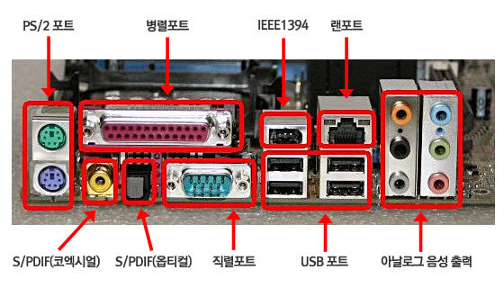</a>
<p class="caption"><span class="caption-number">Fig. 5.32 </span><span class="caption-text">컴퓨터 하드웨어에서 사용하는 <code class="docutils literal notranslate"><span class="pre">포트</span></code>의 예</span><a class="headerlink" href="#appendix-32-hardware-ports" title="Permalink to this image">¶</a></p>
</div>
<p>반면에 통신에서 사용하는 포트 번호는 특정 네트워크 프로그램 또는 운영체제 위에서 돌아가고 있는 특정 프로세스(작동중인 프로그램)를 구별하는 논리 번호 입니다.
네트워크에서 <code class="docutils literal notranslate"><span class="pre">포트</span> <span class="pre">번호</span></code>는 눈에 보이지 않습니다. 예를 들면 다음과 같은 경우입니다.</p>
<ul class="simple">
<li><p>포트 번호 25: 이메일 전송에 사용하는 프로토콜이 사용할 번호</p></li>
<li><p>포트 번호 80: 웹 페이지 전송에 사용할 프로토콜이 사용할 번호</p></li>
</ul>
</div>
<p>IP 주소만 안다고 아무나 서버에 접속하면 안 되겠죠?
그래서 서버 접속은 네트워크(인터넷)을 이용하기 때문에 보안이 필요합니다.
서버 접속 보안을 위해 주로 사용하는 방법은 아이디와 패스워드를 사용합니다.</p>
<p>아마존 클라우드 서버에 접속하려고 합니다.
클라우드 서버는 컴퓨팅 자원(CPU, 메모리, HDD)이 부족하거나 네트워크 트래픽이 급증하면
자동으로 컴퓨팅 자원을 증가시키게 됩니다.
이런 기능을 <code class="docutils literal notranslate"><span class="pre">Auto</span> <span class="pre">Scaling</span></code> (참고: <a class="reference external" href="https://docs.aws.amazon.com/ko_kr/autoscaling/ec2/userguide/what-is-amazon-ec2-auto-scaling.html">click</a>)이라고 합니다.</p>
<p>클라우드 서버는 사용자가 클릭 몇 번으로 원하는 서버를 쉽게 만들 수 있습니다.
하지만, 만약 내가 서버를 직접 구축했다면 서버 마음대로 CPU나 메모리가 커지거나 적어지지는 않습니다. 컴퓨팅 자원을 늘이려면 직접 구매해서 장착해야 하니까요.</p>
<p>하지만 클라우드 서버는 자동으로 조절되게 할 수 있습니다.
그리고 클릭 몇 번만 해주면 서버 자원 능력을 쉽게 바꿀 수 있습니다.
그러나 여러분이 서버를 직접 운영한다면 CPU나 메모리를 직접 구매해서 서버에 달아주고 드라이버 설치하는 등 다양한 일들을 해야 할 것입니다.
직접 운영하는 서버는 클릭 몇 번에 해결되는 경우는 없다는 뜻입니다.</p>
<p>이러한 클라우드 서버의 장점 점은 아주 강력한 장점이기도 하지만, 반면에 치명적인 단점이 되기도 합니다.</p>
<p>만약 해킹이 된다면 해커가 마음대로 고사양 서버를 생성해서 마음대로 사용한다면,
상상하기 어려울만큼 엄청남 요금 폭탄을 맞을 수 있습니다.
그래서 필요한 것이 추가적인 보안 접속 방법입니다.
참고로 아마존에서는 SSH로 원격 서버에 접속할 경우에는 비밀키를 이용한 접속 방법만을 허용하고 있습니다.</p>
<p>이제 본격적으로 아마존 클라우드 서버(인스턴스)에 접속해 볼까요?</p>
<p>Amazone EC2 콘솔에서 그림 <a class="reference internal" href="#appendix-29-moving-to-ec2-connect-menu-1"><span class="std std-numref">Fig. 5.33</span></a> 또는 <a class="reference internal" href="#appendix-30-moving-to-ec2-connect-menu-2"><span class="std std-numref">Fig. 5.34</span></a>와 같이 메뉴를 이동하여 <code class="docutils literal notranslate"><span class="pre">연결</span></code> 아이콘을 클릭합니다. 클릭하면 서버에 접속할 수 있는 방법을 안내하는 페이지로 이동합니다.</p>
<div class="figure align-left" id="appendix-29-moving-to-ec2-connect-menu-1">
<a class="bg-primary mb-1 reference internal image-reference" href="../../_images/appendix_29_moving_to_ec2_connect_menu_1.png">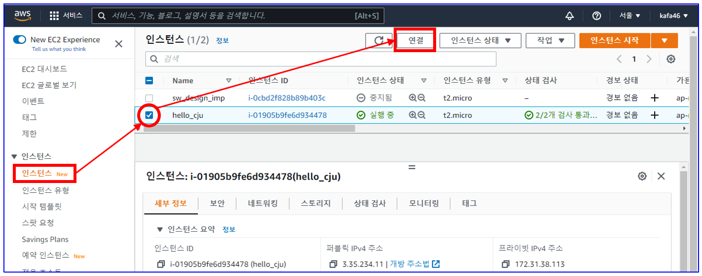</a>
<p class="caption"><span class="caption-number">Fig. 5.33 </span><span class="caption-text">인스턴스(클라우드 서버) 연결 메뉴 이동 1</span><a class="headerlink" href="#appendix-29-moving-to-ec2-connect-menu-1" title="Permalink to this image">¶</a></p>
</div>
<div class="figure align-left" id="appendix-30-moving-to-ec2-connect-menu-2">
<a class="bg-primary mb-1 reference internal image-reference" href="../../_images/appendix_30_moving_to_ec2_connect_menu_2.png">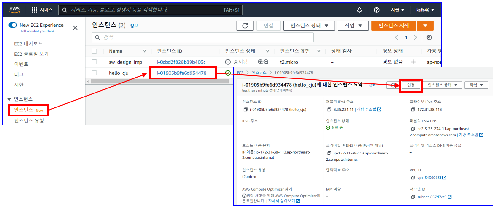</a>
<p class="caption"><span class="caption-number">Fig. 5.34 </span><span class="caption-text">인스턴스(클라우드 서버) 연결 메뉴 이동 2</span><a class="headerlink" href="#appendix-30-moving-to-ec2-connect-menu-2" title="Permalink to this image">¶</a></p>
</div>
<p>Amazon EC2 서버를 기준으로 아마존 클라우드 서버에 접속하는 방법은 4가지 정도 가능합니다.</p>
<div class="figure align-left" id="appendix-31-ec2-connect-option">
<a class="bg-primary mb-1 reference internal image-reference" href="../../_images/appendix_31_ec2_connect_option.png">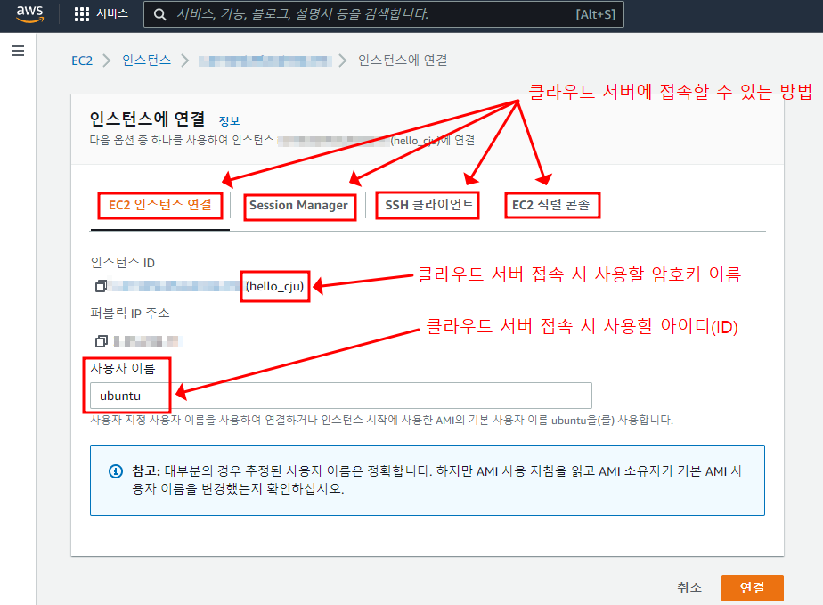</a>
<p class="caption"><span class="caption-number">Fig. 5.35 </span><span class="caption-text">인스턴스(클라우드 서버) 접속 방법</span><a class="headerlink" href="#appendix-31-ec2-connect-option" title="Permalink to this image">¶</a></p>
</div>
<p>그림 <a class="reference internal" href="#appendix-31-ec2-connect-option"><span class="std std-numref">Fig. 5.35</span></a>과 같이 클라우드 서버에 접속할 수 있는 방법이 안내됩니다. 4가지 방법이 가능하다고 안내하고 있습니다.</p>
<ul>
<li><p><code class="docutils literal notranslate"><span class="pre">EC2</span> <span class="pre">인스턴스</span> <span class="pre">연결</span></code>: 웹 브라우저에서(크롬, 엣지 등) 클릭 한번으로 클라우드 서버(인스턴스)에 접속하는 방법입니다. AWS EC2 콘솔에 로그인 되어 있다면, 가장 편리한 방법입니다.</p></li>
<li><p><code class="docutils literal notranslate"><span class="pre">Session</span> <span class="pre">Manager</span></code>: <code class="docutils literal notranslate"><span class="pre">아마존</span> <span class="pre">세션</span> <span class="pre">관리자</span></code>라고도 부릅니다. 아마존의 클라우드 서버 <code class="docutils literal notranslate"><span class="pre">EC2</span> </code>(Elastic Compute 2), <code class="docutils literal notranslate"><span class="pre">온프레미스</span></code>(On-premise) 서버, <code class="docutils literal notranslate"><span class="pre">가상머신</span></code>(Virtual Machine), <code class="docutils literal notranslate"><span class="pre">엣지</span> <span class="pre">디바이스</span></code>(Edge Device)를 통합관리할 수 있는 기능입니다. 참고문서 <a class="reference external" href="https://docs.aws.amazon.com/systems-manager/latest/userguide/session-manager.html">click</a></p>
<div class="admonition- admonition">
<p class="admonition-title">온프레미스</p>
<p>클라우드와 같은 원격 환경이 아닌 자체적으로 구축한 서버를 의미합니다. 회사 또는 대학교 전산실에서 자체적으로 운영하는 서버실을 일컬을때 사용하는 단어입니다.</p>
</div>
</li>
<li><p><code class="docutils literal notranslate"><span class="pre">SSH</span> <span class="pre">클라이언트</span></code>: 클라이언트(여러분의 컴퓨터, 혹은 서버에 접속하려는 컴퓨터)에 설치된 SSH 프로그램을 이용하여 서버에 접속하는 방법입니다. 가장 많이 사용하는 방법입니다.</p>
<div class="admonition-ssh admonition">
<p class="admonition-title">SSH</p>
<p>SSH(Secure SHell)은 멀리 떨어져 있는 컴퓨터에 접속하기 위한 통신 방법(프로토콜)입니다.
사용자들이 접속할 서버에는 <code class="docutils literal notranslate"><span class="pre">SSH</span> <span class="pre">서버</span></code> 프로그램이, 클라이언트(서버에 접속하려는 컴퓨터)에는 <code class="docutils literal notranslate"><span class="pre">SSH</span> <span class="pre">클라이언트</span></code> 프로그램이 설치되어 있어야 합니다. SSH 프로토콜은 기본적으로 TCP 22번 포트를 사용합니다.</p>
</div>
</li>
<li><p><code class="docutils literal notranslate"><span class="pre">EC2</span> <span class="pre">직렬</span> <span class="pre">콘솔</span></code>: 클라우드 서버의 직렬 포트 (Serial Port)에 직접 연결한 것과 동일한 기능을 제공하는 접속 방식입니다. 서버의 장애 해결, 네트워크 설정 등 서버에 문제가 발생한 경우에 사용합니다. 클라우드 서버를 부팅할때 생성되는 모든 메시지를 볼 수 있습니다. 우리가 사용한 클라우드 서버(인스턴스)에는 적용할 수 없는 기능입니다. 참고문서 <a class="reference external" href="https://docs.aws.amazon.com/AWSEC2/latest/UserGuide/ec2-serial-console.html?icmpid=docs_ec2_console">click</a></p></li>
</ul>
<p>우리는 아래 4가지 방법 중에서 <a class="reference internal" href="#ec2-instance-connection"><span class="std std-ref">EC2 인스턴스 연결 기능 활용하기</span></a> 방법과 <a class="reference internal" href="#ssh-client-connection"><span class="std std-ref">SSH 클라이언트 이용하여 접속하기</span></a> 방법을 활용할 예정입니다.</p>
<p>서버 접속 시 사용할 암호키 파일 <code class="docutils literal notranslate"><span class="pre">.pem</span></code> 이름을 안내해 줍니다.
제가 사용할 클라우드 서버(인스턴스)에 적용할 암호키 파일은 <code class="docutils literal notranslate"><span class="pre">hello_cju.pem</span></code>이 됩니다.
여러분에게는 각자 지정한 <code class="docutils literal notranslate"><span class="pre">.pem</span></code> 파일 이름을 친절하게 안내해 줄 것입니다.</p>
<p>아래쪽에 <code class="docutils literal notranslate"><span class="pre">사용자</span> <span class="pre">이름</span></code>에 <code class="docutils literal notranslate"><span class="pre">ubuntu</span></code>라고 기본(default)설정 되어 있을 겁니다.
우분투 운영체제는 수많은 리눅스의 파생형 중 하나입니다.
세계적으로 가장 많이 사용되기 때문에 우리가 선택한 운영체제입니다.
리눅스는 기본적으로 다수 사용자가 동시에 이용하는 개념으로 설계되어 있습니다.</p>
<p>다수의 사용자를 구분하려면 아이디(ID)가 필요하겠죠?
우리가 만든 클라우드 서버(인스턴스)에도 리눅스 운영체제가 깔려 있을테니 당연히 접속하기 위해서는 아이디가 필요합니다. 그때 사용할 아이디 이름이 <code class="docutils literal notranslate"><span class="pre">ubuntu</span></code>라고 알려주는 것입니다.
각자 희망하는 아이디가 있다면 입력해도 됩니다.
우리는 일단 <code class="docutils literal notranslate"><span class="pre">ubuntu</span></code>라는 이름(아이디)을 그대로 사용하겠습니다.</p>
<div class="section" id="ec2">
<span id="ec2-instance-connection"></span><h2><span class="section-number">5.4.1. </span>EC2 인스턴스 연결 기능 활용하기<a class="headerlink" href="#ec2" title="Permalink to this headline">¶</a></h2>
<p>Amazon EC2 Console에서 지원하는 기능을 이용하여 편리하게 접속하는 기능입니다.
매우 편리하고 간편한 방법입니다.
먼저 이 방법을 이용해서 접속해 보겠습니다.</p>
<div class="figure align-left" id="appendix-33-ec2-option-instance-connect">
<a class="bg-primary mb-1 reference internal image-reference" href="../../_images/appendix_33_ec2_option_instance_connect.png">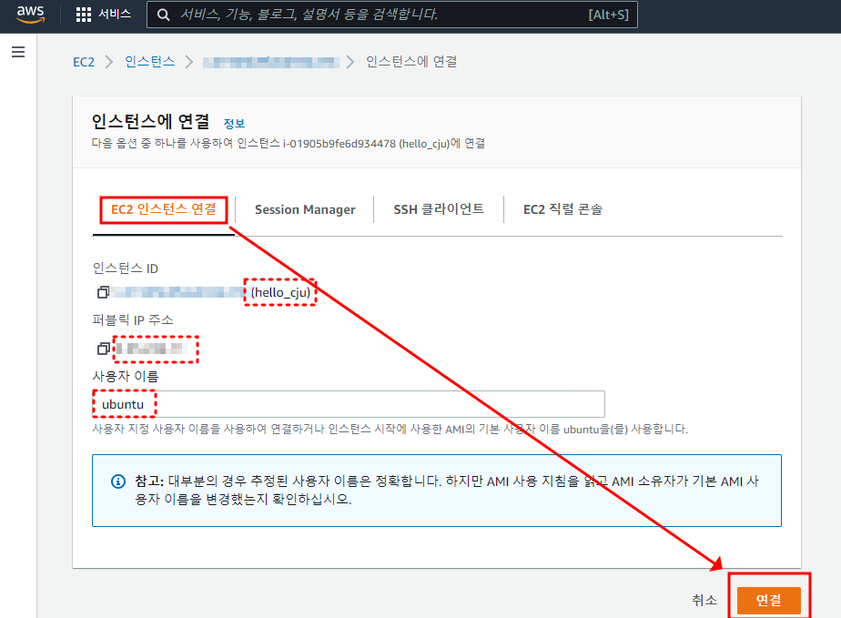</a>
<p class="caption"><span class="caption-number">Fig. 5.36 </span><span class="caption-text"><code class="docutils literal notranslate"><span class="pre">EC2</span> <span class="pre">인스턴스</span> <span class="pre">연결</span></code> 이용하여 연결하기 메뉴</span><a class="headerlink" href="#appendix-33-ec2-option-instance-connect" title="Permalink to this image">¶</a></p>
</div>
<p>그림 <a class="reference internal" href="#appendix-33-ec2-option-instance-connect"><span class="std std-numref">Fig. 5.36</span></a>에서 <code class="docutils literal notranslate"><span class="pre">EC2</span> <span class="pre">인스턴스</span> <span class="pre">연결</span></code>  클릭하고 <code class="docutils literal notranslate"><span class="pre">연결</span></code> 아이콘을 클릭합니다. 이 때 본인의 <code class="docutils literal notranslate"><span class="pre">.pem</span></code> 파일 이름, 퍼블릭 IP 주소, 아이디 등 정보를 유의깊게 살펴보세요.</p>
<p><code class="docutils literal notranslate"><span class="pre">연결</span></code>을 클릭하면 그림 <a class="reference internal" href="#appendix-34-ec2-option-instance-connect-success"><span class="std std-numref">Fig. 5.37</span></a>과 같은 브라우저(크롬 등) 창이 생깁니다.</p>
<div class="figure align-left" id="appendix-34-ec2-option-instance-connect-success">
<a class="bg-primary mb-1 reference internal image-reference" href="../../_images/appendix_34_ec2_option_instance_connect_success.png">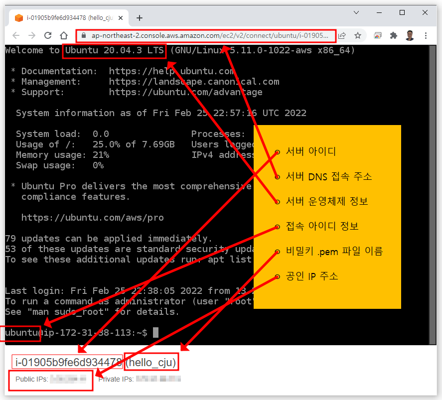</a>
<p class="caption"><span class="caption-number">Fig. 5.37 </span><span class="caption-text"><code class="docutils literal notranslate"><span class="pre">EC2</span> <span class="pre">인스턴스</span> <span class="pre">연결</span></code>에 성공하여 새로 나타난 브라우저 창(Window)</span><a class="headerlink" href="#appendix-34-ec2-option-instance-connect-success" title="Permalink to this image">¶</a></p>
</div>
<p>하지만 이 방법은 불편한 점이 있습니다.
시간이 지나면 보안을 위해서 자동으로 연결이 중지 됩니다.
그러면 그 동안 작업했던 내용들이 같이 중단되기도 합니다.</p>
<p>빈번히 접속해야 하는 경우 AWS EC2 콘솔에 매번 접속해야 하는 번거로움도 있고, 즐겨찾기를 하거나 여러 대의 서버를 등록하여 사용하기도 불편합니다.</p>
<p>그래서 이 방법보다는 SSH 클라이언트를 이용하는 방법을 더 자주 사용합니다.</p>
</div>
<div class="section" id="ssh">
<span id="ssh-client-connection"></span><h2><span class="section-number">5.4.2. </span>SSH 클라이언트 이용하여 접속하기<a class="headerlink" href="#ssh" title="Permalink to this headline">¶</a></h2>
<p>원격에서 고객의 요청(<code class="docutils literal notranslate"><span class="pre">request</span></code>)에 답변(<code class="docutils literal notranslate"><span class="pre">response</span></code>)을 보내주는 컴퓨터를 서버라고 합니다.
서버에 요청을 보내는 컴퓨터를 클라이언트라고 합니다.</p>
<p>SSH는 원격 컴퓨터에 보안이 강화된 방법으로 접속하기 위한 통신 프로토콜입니다.
SSH 통신을 위해서 서버에는 <code class="docutils literal notranslate"><span class="pre">SSH</span> <span class="pre">server</span></code> 프로그램이 동작하고 있어야 하고,
클라이언트 컴퓨터에는 <code class="docutils literal notranslate"><span class="pre">SSH</span> <span class="pre">client</span></code> 프로그램이 동작해야 합니다.</p>
<p>서버 컴퓨터에서 작동하는 <code class="docutils literal notranslate"><span class="pre">SSH</span> <span class="pre">server</span></code>를 <code class="docutils literal notranslate"><span class="pre">SSH</span> <span class="pre">데몬</span></code>(<code class="docutils literal notranslate"><span class="pre">deamon</span></code>) 이라고 부르기도 합니다.
우리가 만든 클라우드 서버에는 우분투 리눅스가 깔려 있습니다.
리눅스 운영체계는 <code class="docutils literal notranslate"><span class="pre">openssh-server</span></code>라는 데몬이 기본적으로 설치되고, 서버를 작동시키면 자동으로 동작합니다.</p>
<p>만약 설치되어 있지 않다면 터미널을 열고 다음 명령어를 실행시키면 우분투 패키지 관리자 <code class="docutils literal notranslate"><span class="pre">apt</span></code>가 자동으로 설치해 줍니다.</p>
<div class="highlight-default notranslate"><div class="highlight"><pre><span></span><span class="n">sudo</span> <span class="n">apt</span> <span class="n">install</span> <span class="n">openssh</span><span class="o">-</span><span class="n">server</span>
</pre></div>
</div>
<p><code class="docutils literal notranslate"><span class="pre">openssh-server</span></code>가 실행되고 있는지 확인하려면 다음과 같은 명령어를 사용합니다.</p>
<div class="highlight-bash notranslate"><div class="highlight"><pre><span></span>sudo systemctl status sshd
</pre></div>
</div>
<p>위 명령어를 실행하면 아래와 같은 결과가 나옵니다.</p>
<div class="highlight-default notranslate"><div class="highlight"><pre><span></span>● ssh.service - OpenBSD Secure Shell server
     Loaded: loaded (/lib/systemd/system/ssh.service; enabled; vendor preset: enabled)
    Drop-In: /usr/lib/systemd/system/ssh.service.d
             └─ec2-instance-connect.conf
     Active: active (running) since Sat 2022-02-26 01:29:32 UTC; 36s ago
       Docs: man:sshd(8)
             man:sshd_config(5)
   Main PID: 18871 (sshd)
      Tasks: 1 (limit: 1147)
     Memory: 1.0M
     CGroup: /system.slice/ssh.service
             └─18871 sshd: /usr/sbin/sshd -D -o AuthorizedKeysCommand /usr/share/ec2-instance-connect/eic_run_aut&gt;

Feb 26 01:29:32 ip-172-31-38-113 systemd[1]: Starting OpenBSD Secure Shell server...
Feb 26 01:29:32 ip-172-31-38-113 sshd[18871]: Server listening on 0.0.0.0 port 22.
Feb 26 01:29:32 ip-172-31-38-113 sshd[18871]: Server listening on :: port 22.
Feb 26 01:29:32 ip-172-31-38-113 systemd[1]: Started OpenBSD Secure Shell server.
</pre></div>
</div>
<p>위 코드의 중간 부분에 <code class="docutils literal notranslate"><span class="pre">Active:</span> <span class="pre">active</span> <span class="pre">(running)</span> <span class="pre">~</span> <span class="pre">~</span></code>라는 라인에서 <code class="docutils literal notranslate"><span class="pre">active</span> <span class="pre">(running)</span></code>이라는 글자가 보이면 잘 작동하고 있는 것입니다.
만약 <code class="docutils literal notranslate"><span class="pre">inactive</span> <span class="pre">(dead)</span></code>라는 글자가 보이면 SSH 데몬이 죽어있는 상태입니다.
이럴 경우에는 다음 명령어를 실행시켜 SSH 데몬을 실행시킵니다.</p>
<div class="highlight-default notranslate"><div class="highlight"><pre><span></span><span class="n">sudo</span> <span class="n">systemctl</span> <span class="n">start</span> <span class="n">sshd</span>
</pre></div>
</div>
<p>이후에 다시 SSH 데몬 상태를 확인해 보면 됩니다.</p>
<div class="highlight-default notranslate"><div class="highlight"><pre><span></span><span class="n">sudo</span> <span class="n">systemctl</span> <span class="n">status</span> <span class="n">sshd</span>
</pre></div>
</div>
<p>그렇다면 서버에 접속할 클라이언트 컴퓨터(여러분의 PC)에는 무엇이 있어야 할까요?
걱정할 필요가 없습니다.
대부분의 운영체제에는 SSH client 프로그램이 기본으로 설치되어 있습니다.</p>
<ul>
<li><p>윈도우라면 파워쉘(<code class="docutils literal notranslate"><span class="pre">PowerShell</span></code>) 프로그램을 실행시키고 <code class="docutils literal notranslate"><span class="pre">ssh</span></code>라고 타이핑한 다음에 엔터를 칩니다. 그러면 그림 <a class="reference internal" href="#appendix-35-ssh-powershell"><span class="std std-numref">Fig. 5.38</span></a>와 같은 결과가 나오면 정상입니다.</p>
<div class="figure align-left" id="appendix-35-ssh-powershell">
<a class="bg-primary mb-1 reference internal image-reference" href="../../_images/appendix_35_ssh_powershell.png">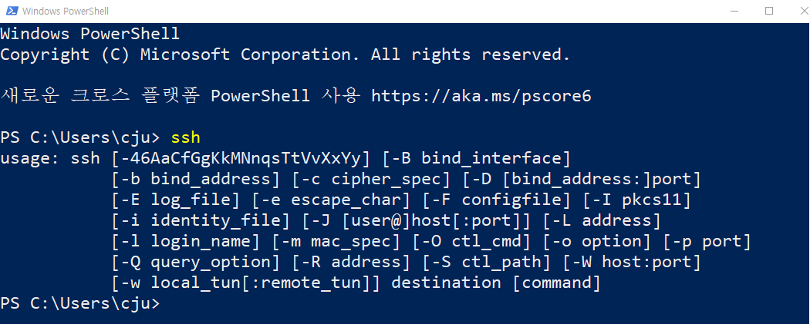</a>
<p class="caption"><span class="caption-number">Fig. 5.38 </span><span class="caption-text">윈도우 <code class="docutils literal notranslate"><span class="pre">PowerShell</span></code>에서 SSH 서버 프로그램을 실행시킨 결과</span><a class="headerlink" href="#appendix-35-ssh-powershell" title="Permalink to this image">¶</a></p>
</div>
</li>
<li><p>리눅스(우분투)의 경우 <code class="docutils literal notranslate"><span class="pre">터미널(Terminal)</span></code>을 열고 <code class="docutils literal notranslate"><span class="pre">ssh</span></code>라고 타이핑한 다음에 엔터를 칩니다.
그림 <a class="reference internal" href="#appendix-36-ssh-ubuntu"><span class="std std-numref">Fig. 5.39</span></a>와 같은 결과가 나오면 정상입니다.</p>
<div class="figure align-left" id="appendix-36-ssh-ubuntu">
<a class="bg-primary mb-1 reference internal image-reference" href="../../_images/appendix_36_ssh_ubuntu.png">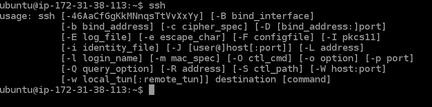</a>
<p class="caption"><span class="caption-number">Fig. 5.39 </span><span class="caption-text">리눅스 <code class="docutils literal notranslate"><span class="pre">터미널(Terminal)</span></code>에서 SSH 서버 프로그램을 실행시킨 결과</span><a class="headerlink" href="#appendix-36-ssh-ubuntu" title="Permalink to this image">¶</a></p>
</div>
</li>
</ul>
<p>여러분의 컴퓨터(PC)에도 전부다 SSH client 프로그램이 설치되어 있을 것입니다.</p>
<p>클라이언트에서 서버로 접속하기 위한 명령어는 다음과 같습니다.</p>
<div class="highlight-default notranslate"><div class="highlight"><pre><span></span><span class="n">ssh</span> <span class="p">[</span><span class="n">서버에서</span> <span class="n">사용하는</span> <span class="n">아이디</span><span class="p">]</span><span class="o">@</span><span class="p">[</span><span class="n">서버</span> <span class="n">IP</span> <span class="n">주소</span><span class="p">]</span>

<span class="c1"># [사용 예시]</span>
<span class="c1"># 만약 여러분 서버의 접속 정보가 다음과 같다면,</span>
<span class="c1"># 공인 IP 주소: 3.352.234.111</span>
<span class="c1"># 아이디: ubuntu</span>
<span class="c1"># 명령창에 다음과 같이 ssh 명령어를 실행시킵니다.</span>

<span class="n">ssh</span> <span class="n">ubuntu</span><span class="o">@</span><span class="mf">3.352.234.111</span>
</pre></div>
</div>
<p>일반적인 경우 위 명령어를 실행하면 비밀번호를 입력하라는 메시지가 나오고,
비밀번호가 맞다면 서버에 바로 접속할 수 있습니다.</p>
<p>하지만 아마존 클라우드 서버는 보안 강화를 위해 비밀키 <code class="docutils literal notranslate"><span class="pre">.pem</span></code> 파일을 사용해야 한다고 했죠?
위와 같은 방법으로는 <code class="docutils literal notranslate"><span class="pre">접속</span> <span class="pre">거부(Permission</span> <span class="pre">Denied)</span></code> 메시지가 뜨면서 접속할 수 없게 됩니다.</p>
<p>이런 경우에는 다음과 같은 명령어를 사용하면 접속이 가능합니다.</p>
<div class="highlight-default notranslate"><div class="highlight"><pre><span></span><span class="n">ssh</span> <span class="o">-</span><span class="n">i</span> <span class="o">/</span><span class="n">path</span><span class="o">/</span><span class="n">my</span><span class="o">-</span><span class="n">key</span><span class="o">-</span><span class="n">pair</span><span class="o">.</span><span class="n">pem</span> <span class="n">my</span><span class="o">-</span><span class="n">instance</span><span class="o">-</span><span class="n">user</span><span class="o">-</span><span class="n">name</span><span class="nd">@my</span><span class="o">-</span><span class="n">instance</span><span class="o">-</span><span class="n">public</span><span class="o">-</span><span class="n">dns</span><span class="o">-</span><span class="n">name</span>
</pre></div>
</div>
<p>또는</p>
<div class="highlight-default notranslate"><div class="highlight"><pre><span></span><span class="n">ssh</span> <span class="o">-</span><span class="n">i</span> <span class="o">/</span><span class="n">path</span><span class="o">/</span><span class="n">my</span><span class="o">-</span><span class="n">key</span><span class="o">-</span><span class="n">pair</span><span class="o">.</span><span class="n">pem</span> <span class="n">my</span><span class="o">-</span><span class="n">instance</span><span class="o">-</span><span class="n">user</span><span class="o">-</span><span class="n">name</span><span class="nd">@my</span><span class="o">-</span><span class="n">instance</span><span class="o">-</span><span class="n">public</span><span class="o">-</span><span class="n">ip</span><span class="o">-</span><span class="n">address</span>
</pre></div>
</div>
<p>위 명령어를 입력하더라도 <code class="docutils literal notranslate"><span class="pre">private</span> <span class="pre">key</span></code> 파일을 입력하라, 보안이 수준이 어떻다는 등등 메시지를 계속 마주하며 해결해 나가야 합니다.</p>
<p>이런 명령어를 일일히 키보드로 입력하고 메시지를 확인하는 것은 매우 번거롭습니다.
서버 접속을 편리하게 도와주는 툴(소프트웨어)이 있습니다.</p>
<p>대표적으로 많이 사용하는 것이 <code class="docutils literal notranslate"><span class="pre">Putty</span></code>와 <code class="docutils literal notranslate"><span class="pre">Xshell</span></code>, <code class="docutils literal notranslate"><span class="pre">mobaXterm</span></code> 등이 있습니다.
대부분 SSH 클라이언트 소프트웨어는 거기서 거기입니다.
아무것이나 선택해서 사용하면 됩니다.
우리는 <code class="docutils literal notranslate"><span class="pre">Xshell</span></code> 프로그램을 사용해 볼 것입니다.</p>
<p>각 프로그램의 안내/설명은 아래 링크를 참고하세요.</p>
<ul class="simple">
<li><p><code class="docutils literal notranslate"><span class="pre">putty</span></code>: 무료, 가볍고 간단해서 세계적으로 많이 사용 <span class="math notranslate nohighlight">\(\to\)</span> <a class="reference external" href="https://www.putty.org/">click</a></p></li>
<li><p><code class="docutils literal notranslate"><span class="pre">mobaXterm</span></code>: 가정용 무료, <code class="docutils literal notranslate"><span class="pre">putty</span></code>보다 다양한 기능 <span class="math notranslate nohighlight">\(\to\)</span> <a class="reference external" href="https://mobaxterm.mobatek.net/">click</a></p></li>
<li><p><code class="docutils literal notranslate"><span class="pre">Xshell</span></code>: 가정 및 학교 무료, 한국 벤처회사에서 만든 소프트웨어, 다양한 기능 지원 <span class="math notranslate nohighlight">\(\to\)</span> <a class="reference external" href="https://www.netsarang.com/ko/xshell/">click</a></p></li>
</ul>
<div class="section" id="ssh-xshell">
<h3><span class="section-number">5.4.2.1. </span>SSH 클라이언트 - Xshell 설치<a class="headerlink" href="#ssh-xshell" title="Permalink to this headline">¶</a></h3>
<p><code class="docutils literal notranslate"><span class="pre">Xshell</span></code>은 대한민국에서 개발한 소프트웨어로 전세계적으로도 많이 사용되고 있는 SSH 클라이언트 프로그램입니다. 우리는 Xshell을 이용해서 아마존 클라우드 서버에 접속해 보겠습니다.</p>
<p>먼저 Xshell 다운로드 페이지 <a class="reference external" href="https://www.netsarang.com/ko/xshell-download/">click</a>에서  가정 및 학교 내 사용자를 위한 <code class="docutils literal notranslate"><span class="pre">무료</span> <span class="pre">라이선스</span> <span class="pre">페이지</span></code>를 클릭합니다. 그림 <a class="reference internal" href="#appendix-37-xshell-free-license"><span class="std std-numref">Fig. 5.40</span></a>를 참고하세요.</p>
<div class="figure align-left" id="appendix-37-xshell-free-license">
<a class="bg-primary mb-1 reference internal image-reference" href="../../_images/appendix_37_xshell_free_license.png">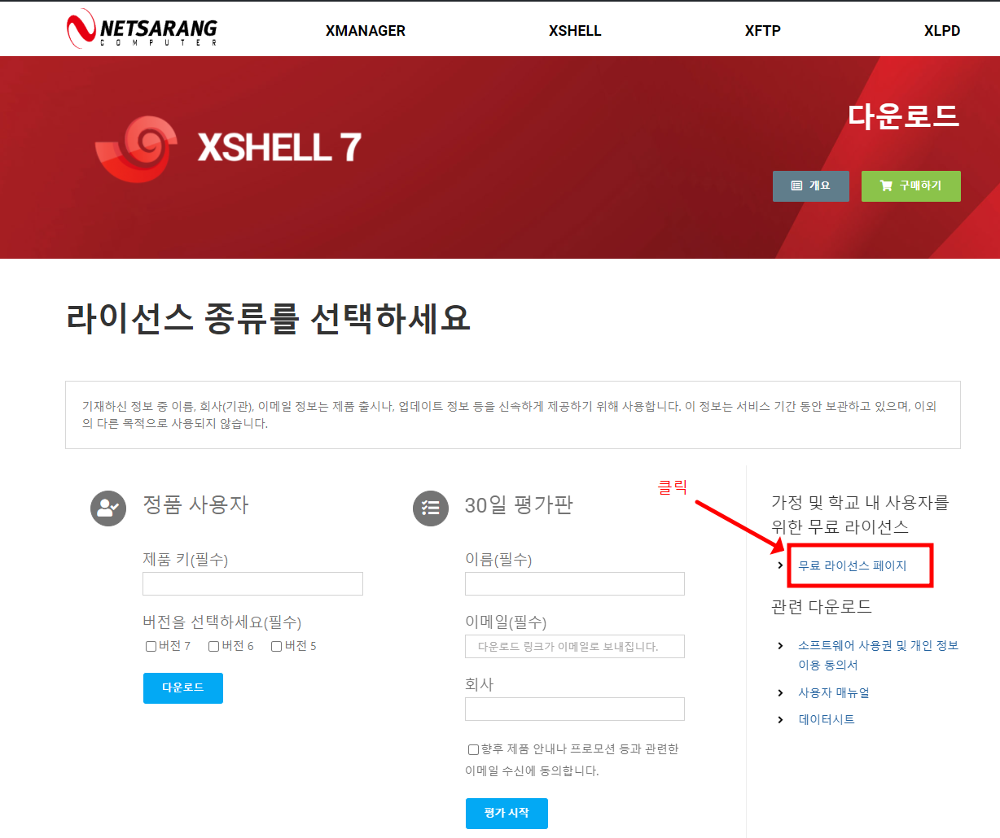</a>
<p class="caption"><span class="caption-number">Fig. 5.40 </span><span class="caption-text">Xshell 무료 라이선스 다운로드 링크</span><a class="headerlink" href="#appendix-37-xshell-free-license" title="Permalink to this image">¶</a></p>
</div>
<p>그림 <a class="reference internal" href="#appendix-38-xshell-download-field"><span class="std std-numref">Fig. 5.41</span></a>를 참고하여 이름, 이메일, 다운로드 받고 싶은 프로그램(Xshell, Xftp, 또는 둘다)을 선택하고 다운로드 아이콘을 클릭합니다.
우리는 일단 SSH 프로그램만 필요하기 때문에 Xshell 하나만 선택하겠습니다.
여기서 입력한 이메일 주소로 다운로드 링크를 보내줍니다.
이메일은 정확히 입력해야 합니다.</p>
<div class="figure align-left" id="appendix-38-xshell-download-field">
<a class="bg-primary mb-1 reference internal image-reference" href="../../_images/appendix_38_xshell_download_field.png">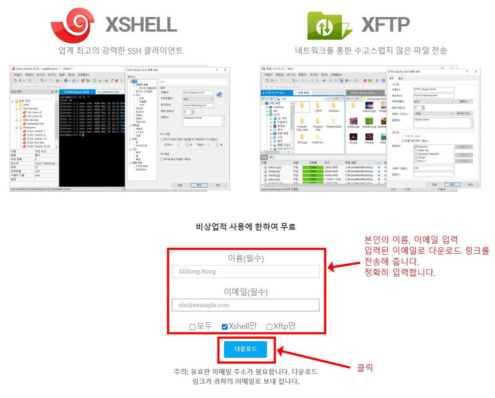</a>
<p class="caption"><span class="caption-number">Fig. 5.41 </span><span class="caption-text">Xshell 무료 라이선스 다운로드 링크</span><a class="headerlink" href="#appendix-38-xshell-download-field" title="Permalink to this image">¶</a></p>
</div>
<p>입력한 이메일로 다운로드 링크를 보내줍니다.
다운로드 받은 후에 본인의 컴퓨터에 프로그램을 설치합니다.
설치 방법은 생략하겠습니다.</p>
</div>
<div class="section" id="xshell">
<h3><span class="section-number">5.4.2.2. </span>Xshell 접속 설정<a class="headerlink" href="#xshell" title="Permalink to this headline">¶</a></h3>
<p>Xshell을 실행시키고 <code class="docutils literal notranslate"><span class="pre">파일-새로만들기</span></code> 메뉴를 실행하거나 단축아이콘을 클릭하여 세션 만들기 창을 띄웁니다. 그림 <a class="reference internal" href="#appendix-39-xshell-id-psswd"><span class="std std-numref">Fig. 5.42</span></a>를 참고하여 서버 <code class="docutils literal notranslate"><span class="pre">이름(N)</span></code>을 입력해 줍니다. 서버 이름은 아무거나 적어도 됩니다.</p>
<p><code class="docutils literal notranslate"><span class="pre">호스트(H)</span></code>에는 여러분이 접속하려는 서버의 공인 IP 주소나 DNS 주소를 적어줍니다.
아마존 클라우드 서버는 공인 IP 주소를 적어줍니다. 클라우드 서버의 공인 IP 주소 대신에 AWS EC2 콘솔에서 확인할 수 있는 <code class="docutils literal notranslate"><span class="pre">퍼블릭</span> <span class="pre">IPv4</span> <span class="pre">DNS</span></code>를 적어줘도 됩니다.</p>
<p>그리고 <code class="docutils literal notranslate"><span class="pre">확인</span></code> 아이콘을 클릭합니다.</p>
<div class="figure align-left" id="appendix-39-xshell-id-psswd">
<a class="bg-primary mb-1 reference internal image-reference" href="../../_images/appendix_39_xshell_id_psswd.png">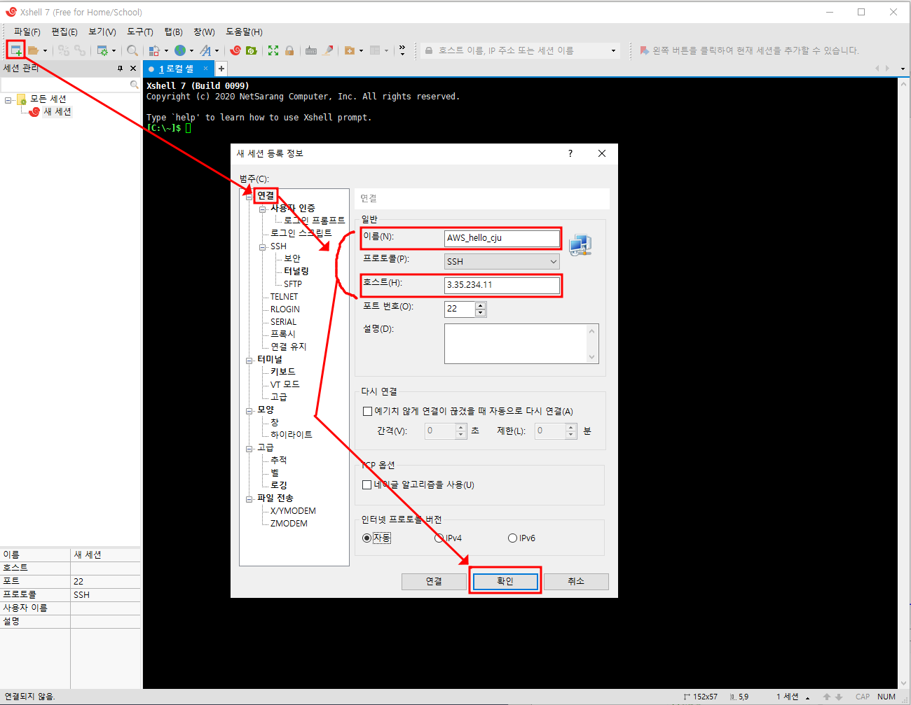</a>
<p class="caption"><span class="caption-number">Fig. 5.42 </span><span class="caption-text">Xshell 무료 라이선스 다운로드 링크</span><a class="headerlink" href="#appendix-39-xshell-id-psswd" title="Permalink to this image">¶</a></p>
</div>
<p>확인을 클릭하면 화면이 사라집니다.
그림 <a class="reference internal" href="#appendix-40-xshell-footprint"><span class="std std-numref">Fig. 5.43</span></a>을 참고하여 조금 전에 만든 서버를 세션관리 창에서 더블클릭 합니다. 맨 처음 접속하는 서버일 경우 손도장(footprint)가 뜹니다. 손도장은 서버에서 여러분의 컴퓨터를 인식하기 위해 랜덤하게 생성해서 보내는 고유한 문자열입니다.</p>
<p><code class="docutils literal notranslate"><span class="pre">한번</span> <span class="pre">수락(O)</span></code>를 클릭하면 다음에 해당 서버에 접속하려 할때 또 손도장 화면이 뜹니다. 번거로움을 방지하기 위해 <code class="docutils literal notranslate"><span class="pre">수락</span> <span class="pre">및</span> <span class="pre">저장(S)</span></code>를 클릭하여 저장합니다. 그림 <a class="reference internal" href="#appendix-40-xshell-footprint"><span class="std std-numref">Fig. 5.43</span></a>을 참고하세요.</p>
<div class="figure align-left" id="appendix-40-xshell-footprint">
<a class="bg-primary mb-1 reference internal image-reference" href="../../_images/appendix_40_xshell_footprint.png">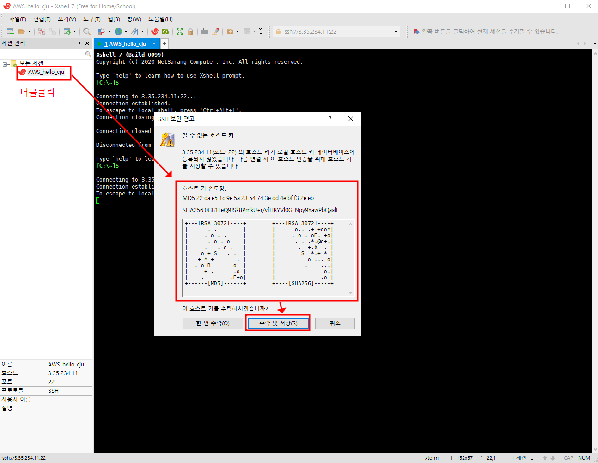</a>
<p class="caption"><span class="caption-number">Fig. 5.43 </span><span class="caption-text">손도장 확인, 수락 및 저장</span><a class="headerlink" href="#appendix-40-xshell-footprint" title="Permalink to this image">¶</a></p>
</div>
<p>Xshell 세션관리창에서 여러분이 만든 서버 이름에 마우스 오른쪽 클릭하여 등록정보를 클릭합니다. <code class="docutils literal notranslate"><span class="pre">연결</span></code> - <code class="docutils literal notranslate"><span class="pre">사용자</span> <span class="pre">인증</span> </code> 메뉴를 선택해서 사용자 이름에는 <code class="docutils literal notranslate"><span class="pre">ubuntu</span></code>를 입력하고 <code class="docutils literal notranslate"><span class="pre">방법</span></code>은 <code class="docutils literal notranslate"><span class="pre">Public</span> <span class="pre">Key</span></code>를 선택하고 <code class="docutils literal notranslate"><span class="pre">확인</span></code> 아이콘을 클릭합니다(만약 AWS EC2 콘솔에서 사용자 이름을 <code class="docutils literal notranslate"><span class="pre">ubuntu</span></code> 이외에 다른 이름을 지정했다면 그 이름을 입력합니다).</p>
<div class="figure align-left" id="appendix-41-xshell-username-publickey">
<a class="bg-primary mb-1 reference internal image-reference" href="../../_images/appendix_41_xshell_userName_publicKey.png">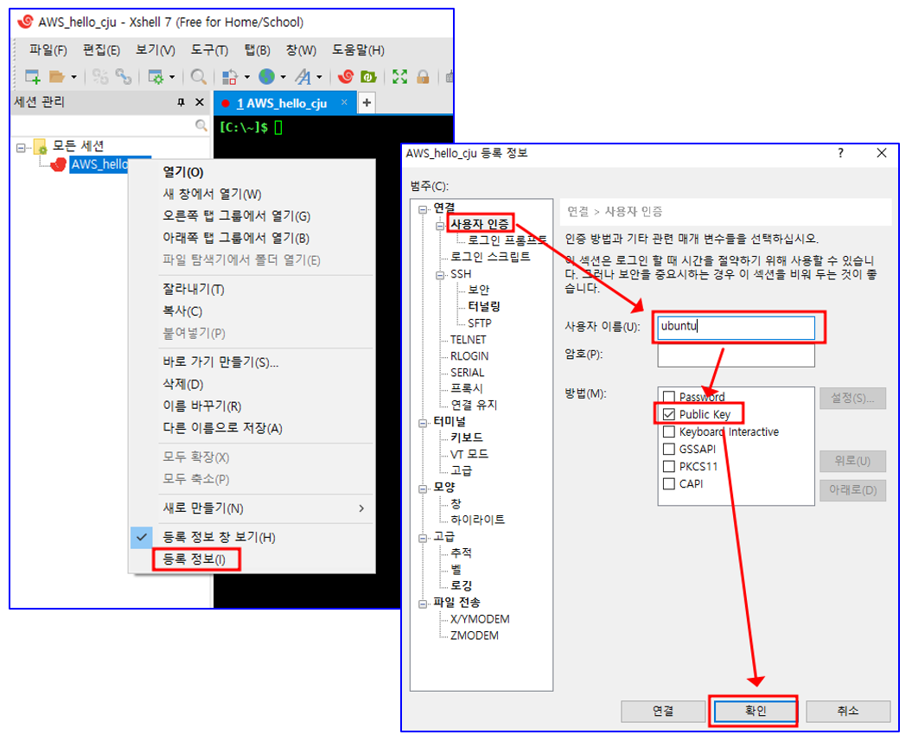</a>
<p class="caption"><span class="caption-number">Fig. 5.44 </span><span class="caption-text">사용자 이름 및 Public Key 선택</span><a class="headerlink" href="#appendix-41-xshell-username-publickey" title="Permalink to this image">¶</a></p>
</div>
<p>이제는 우리가 아마존에서 받은 비밀키 <code class="docutils literal notranslate"><span class="pre">.pem</span></code> 파일을 등록할 차례입니다.
그림 <a class="reference internal" href="#appendix-42-xshell-register-pem-file-with-passwd"><span class="std std-numref">Fig. 5.45</span></a>참고해서 비밀키 파일을 등록합니다.</p>
<div class="figure align-left" id="appendix-42-xshell-register-pem-file-with-passwd">
<a class="bg-primary mb-1 reference internal image-reference" href="../../_images/appendix_42_xshell_register_pem_file_with_passwd.png">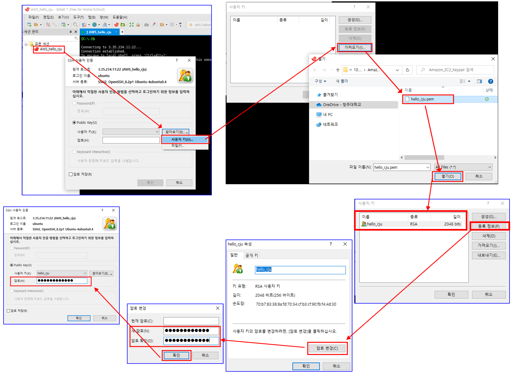</a>
<p class="caption"><span class="caption-number">Fig. 5.45 </span><span class="caption-text">비밀키 <code class="docutils literal notranslate"><span class="pre">.pem</span></code> 파일 등록</span><a class="headerlink" href="#appendix-42-xshell-register-pem-file-with-passwd" title="Permalink to this image">¶</a></p>
</div>
<p>Xshell 세션관리창에서 여러분이 만든 서버 이름을 클릭하면 <code class="docutils literal notranslate"><span class="pre">사용자</span> <span class="pre">키</span></code>를 찾기위한 <code class="docutils literal notranslate"><span class="pre">찾아보기</span></code> - <code class="docutils literal notranslate"><span class="pre">사용자</span> <span class="pre">키</span></code> 메뉴를 선택하면 그 다음창에서 <code class="docutils literal notranslate"><span class="pre">가져오기</span></code> 메뉴를 선택합니다.</p>
<p>파일탐색기 창이 뜹니다. 여러분이 저장해 놓은 비밀키 <code class="docutils literal notranslate"><span class="pre">.pem</span></code> 파일을 엽니다.</p>
<p>사용자키 창에 여러분의 비밀키 파일이 나타납니다.</p>
<p>비밀키 <code class="docutils literal notranslate"><span class="pre">.pem</span></code> 파일에 비밀번호를 부여하기 위해 등록정보를 클릭합니다.</p>
<p><code class="docutils literal notranslate"><span class="pre">암호변경</span></code> 아이콘을 클릭하면 <code class="docutils literal notranslate"><span class="pre">현재</span> <span class="pre">암호</span></code>, <code class="docutils literal notranslate"><span class="pre">새</span> <span class="pre">암호</span></code>, <code class="docutils literal notranslate"><span class="pre">암호</span> <span class="pre">확인</span></code> 입력창이 뜹니다. 현재 암호는 없으므로 빈 칸으로 두고, 새 암호와 암호 확인을 입력하고 확인을 클릭합니다.</p>
<p>확인을 계속 누르면 사용자 인증 창으로 돌아옵니다.
사용자 키가 등록되어 있을 겁니다. 암호 입력창에 여러분이 설정한 암호를 입력하면 아마존 클라우드 서버에 접속할 수 있습니다.</p>
<p>처음에 암호 등록이 복잡하긴 하지만, 한번만 해주면 다음 접속부터는 안해도 됩니다.</p>
</div>
<div class="section" id="id2">
<h3><span class="section-number">5.4.2.3. </span>Xshell로 아마존 서버 접속하기<a class="headerlink" href="#id2" title="Permalink to this headline">¶</a></h3>
<p>모든 작업을 마치고 서버에 접속하면 아래 그림 <a class="reference internal" href="#appendix-43-xshell-ec2-sucess"><span class="std std-numref">Fig. 5.46</span></a> 같은 화면이 뜹니다.</p>
<div class="figure align-left" id="appendix-43-xshell-ec2-sucess">
<a class="bg-primary mb-1 reference internal image-reference" href="../../_images/appendix_43_xshell_ec2_sucess.png">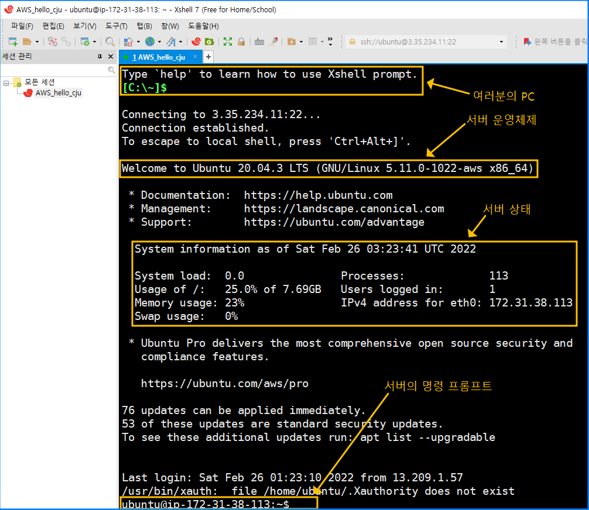</a>
<p class="caption"><span class="caption-number">Fig. 5.46 </span><span class="caption-text">Amazon EC2 서버에 접속한 상태</span><a class="headerlink" href="#appendix-43-xshell-ec2-sucess" title="Permalink to this image">¶</a></p>
</div>
<p>서버는 단순히 클라이언트의 요청을 처리하고 그 결과를 클라이언트에게 알려주는 일을 하기 때문에 MS 윈도우나 맥OS와 같이 예쁜 모양(GUI)를 제공하는 경우는 거의 없습니다. 대부분 명령어를 <code class="docutils literal notranslate"><span class="pre">콘솔(터미널)</span></code>이라고 불리는 까만 명령창을 제공합니다.</p>
<p>그림 <a class="reference internal" href="#appendix-43-xshell-ec2-sucess"><span class="std std-numref">Fig. 5.46</span></a>을 통해 서버 화면을 잠깐 감상해 볼까요?</p>
<p>서버 접속 화면의 맨 위에 있는 메시지는 서버 접속 전에 여러분들의 컴퓨터 위치입니다.</p>
<div class="highlight-default notranslate"><div class="highlight"><pre><span></span>Type `help&#39; to learn how to use Xshell prompt.
[C:\~]$ 
</pre></div>
</div>
<p>위 코드는 제 화면에 나타난 내용입니다.
저는 <code class="docutils literal notranslate"><span class="pre">C</span></code> 드라이브의 사용자(Users) 홈 디렉토리(<code class="docutils literal notranslate"><span class="pre">~</span></code>)에 있었다는 뜻입니다.</p>
<p>아래 코드는 여러분이 접속한 서버는 Ubuntu 20.04.3 LTS 버전을 사용하고 있다는 의미입니다.</p>
<div class="highlight-default notranslate"><div class="highlight"><pre><span></span>    <span class="n">Welcome</span> <span class="n">to</span> <span class="n">Ubuntu</span> <span class="mf">20.04.3</span> <span class="n">LTS</span> <span class="p">(</span><span class="n">GNU</span><span class="o">/</span><span class="n">Linux</span> <span class="mf">5.11.0</span><span class="o">-</span><span class="mi">1022</span><span class="o">-</span><span class="n">aws</span> <span class="n">x86_64</span><span class="p">)</span>
</pre></div>
</div>
<p>다음 코드는 현재 접속한 서버의 전반적인 상황을 설명하고 있습니다.</p>
<div class="highlight-default notranslate"><div class="highlight"><pre><span></span>    <span class="n">System</span> <span class="n">information</span> <span class="k">as</span> <span class="n">of</span> <span class="n">Sat</span> <span class="n">Feb</span> <span class="mi">26</span> <span class="mi">03</span><span class="p">:</span><span class="mi">23</span><span class="p">:</span><span class="mi">41</span> <span class="n">UTC</span> <span class="mi">2022</span>

    <span class="n">System</span> <span class="n">load</span><span class="p">:</span>  <span class="mf">0.0</span>               <span class="n">Processes</span><span class="p">:</span>             <span class="mi">113</span>
    <span class="n">Usage</span> <span class="n">of</span> <span class="o">/</span><span class="p">:</span>   <span class="mf">25.0</span><span class="o">%</span> <span class="n">of</span> <span class="mf">7.69</span><span class="n">GB</span>   <span class="n">Users</span> <span class="n">logged</span> <span class="ow">in</span><span class="p">:</span>       <span class="mi">1</span>
    <span class="n">Memory</span> <span class="n">usage</span><span class="p">:</span> <span class="mi">23</span><span class="o">%</span>               <span class="n">IPv4</span> <span class="n">address</span> <span class="k">for</span> <span class="n">eth0</span><span class="p">:</span> <span class="mf">172.31.38.113</span>
    <span class="n">Swap</span> <span class="n">usage</span><span class="p">:</span>   <span class="mi">0</span><span class="o">%</span>
</pre></div>
</div>
<p>다음 코드는 서버에 명령을 내릴 수 있는 준비가 되어있는 명령 프롬프트 입니다.</p>
<div class="highlight-default notranslate"><div class="highlight"><pre><span></span>ubuntu@ip-172-31-38-113:~$ 
</pre></div>
</div>
<p>각각의 의미는 다음과 같습니다.</p>
<ul class="simple">
<li><p><code class="docutils literal notranslate"><span class="pre">ubuntu</span></code>: 서버에 접속한 아이디 입니다.</p></li>
<li><p><code class="docutils literal notranslate"><span class="pre">ip-172-31-38-113</span></code>: 아마존에서 서버에 붙여준 이름입니다.</p></li>
<li><p><code class="docutils literal notranslate"><span class="pre">~</span></code>: 홈 디렉토리에 있다는 의미입니다. 절대경로는 <code class="docutils literal notranslate"><span class="pre">/home/ubuntu/</span></code>입니다.</p></li>
<li><p><code class="docutils literal notranslate"><span class="pre">$</span></code>: 현재 일반 유저(user) 권한으로 접속해 있다는 의미입니다. 관리자 권한 (super user)으로 변경되면 <code class="docutils literal notranslate"><span class="pre">#</span></code> 표시로 바뀝니다.</p></li>
</ul>
<p>앞서 간략히 설명했던 <code class="docutils literal notranslate"><span class="pre">putty</span></code>, <code class="docutils literal notranslate"><span class="pre">mobaXterm</span></code>와 같은 프로그램도 <code class="docutils literal notranslate"><span class="pre">Xshell</span></code>과 사용법이 매우 비슷합니다. 관심있는 사람들은 공부삼아 한번씩 사용해 보는 것도 좋습니다.</p>
<p>이제 여러분은 SSH 클라이언트의 한 종류(툴, Tool)인 <code class="docutils literal notranslate"><span class="pre">Xshell</span></code> 프로그램을 이용해 서버에 원격 접속하였습니다. 이제 마음껏 서버를 이용해서 작품을 만들면 됩니다.</p>
<p>축하합니다. 짝짝짝~</p>
</div>
</div>
<div class="section" id="vs-code">
<h2><span class="section-number">5.4.3. </span>VS code를 이용하여 접속하기<a class="headerlink" href="#vs-code" title="Permalink to this headline">¶</a></h2>
<p><code class="docutils literal notranslate"><span class="pre">VS</span> <span class="pre">code</span></code>는 거의 모든 프로그래밍 언어를 이용한 개발 환경을 지원하고 있습니다.
또한 다양한 확장 프로그램(익스텐션, extension)이 지원되고 있기 때문에 전 세계적으로 가장 많이 사용되는 통합개발환경(IDE: Integrated Development Environment)입니다.</p>
<p>VS code를 이용해서 서버에 접속하고, 코딩을 진행하고, 터미널에서 명령을 내릴 수 있습니다.
VS code로 서버에 접속해서 코딩 하다가 터미널에 명령어를 주어야 하는 경우에 Xshell 같은 별도 프로그램을 작동시키는 것도 바쁜 개발자에게는 번거로운 일입니다.</p>
<p>이번에는 VS code에서 SSH client를 이용해 서버에 접속하는 방법에 대해 알아보겠습니다.</p>
<div class="section" id="vs-code-ssh">
<h3><span class="section-number">5.4.3.1. </span>VS code에 SSH 확장 프로그램 설치<a class="headerlink" href="#vs-code-ssh" title="Permalink to this headline">¶</a></h3>
<p>VS code에서 SSH 프로토콜을 사용하려면 당연히 SSH client 프로그램이 있어야겠죠?
VS code로 원격 컴퓨터에 접속하기 위해서는 <code class="docutils literal notranslate"><span class="pre">Remote-SSH</span></code>라는 확장(익스텐션) 프로그램을 설치해야 합니다.</p>
<p>그림 <a class="reference internal" href="#appendix-44-vscode-remote-ssh-extension"><span class="std std-numref">Fig. 5.47</span></a>을 먼저 살펴보세요.</p>
<div class="figure align-left" id="appendix-44-vscode-remote-ssh-extension">
<a class="bg-primary mb-1 reference internal image-reference" href="../../_images/appendix_44_vscode_remote_ssh_extension.png">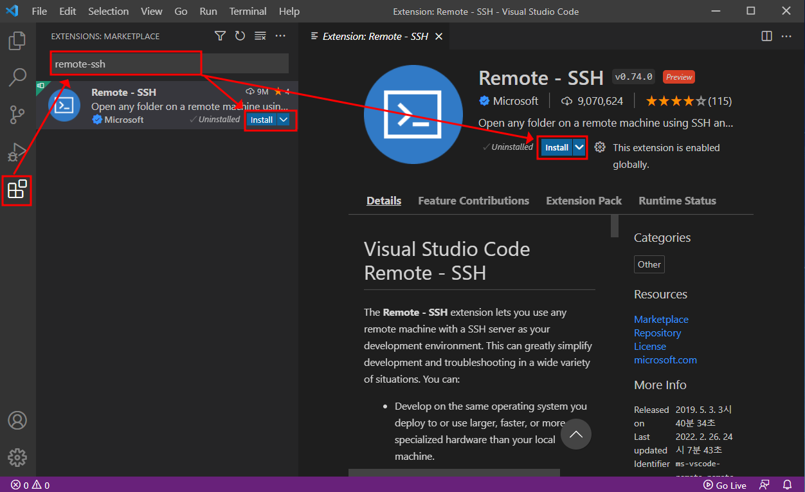</a>
<p class="caption"><span class="caption-number">Fig. 5.47 </span><span class="caption-text">VS code에 SSH 호가장 프로그램 설치</span><a class="headerlink" href="#appendix-44-vscode-remote-ssh-extension" title="Permalink to this image">¶</a></p>
</div>
<p>VS code를 실행시키고 왼쪽에 아이콘들이 세로로 쭉 줄지어 있는 것 중에서 확장 프로그램 아이콘을 클릭합니다.
<code class="docutils literal notranslate"><span class="pre">EXTENSINO:</span> <span class="pre">MARKETPLACE</span></code>라는 글자 밑에 검색창이 나타납니다.
<code class="docutils literal notranslate"><span class="pre">remote-ssh</span></code>라고 검색어를 입력하면 관련된 확장 프로그램 목록이 보입니다.
우리가 필요한 SSH 프로그램은 <code class="docutils literal notranslate"><span class="pre">remote-ssh</span></code>이므로 <code class="docutils literal notranslate"><span class="pre">install</span></code> 아이콘을 클릭하여 설치를 진행합니다.</p>
<p>그림 <a class="reference internal" href="#appendix-45-vscode-remote-ssh-installed"><span class="std std-numref">Fig. 5.48</span></a>은 <code class="docutils literal notranslate"><span class="pre">Remote-SSH</span></code> 설치가 완료된 상태입니다.</p>
<div class="figure align-left" id="appendix-45-vscode-remote-ssh-installed">
<a class="bg-primary mb-1 reference internal image-reference" href="../../_images/appendix_45_vscode_remote_ssh_installed.png">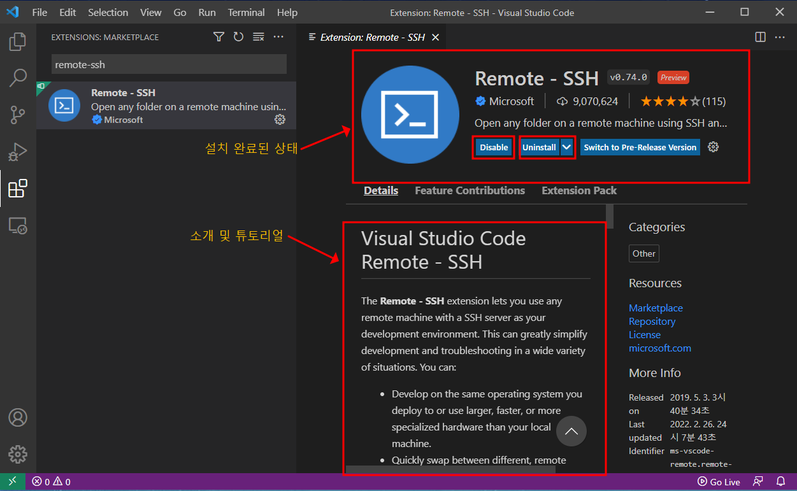</a>
<p class="caption"><span class="caption-number">Fig. 5.48 </span><span class="caption-text">VS code에 SSH 확장 프로그램 설치</span><a class="headerlink" href="#appendix-45-vscode-remote-ssh-installed" title="Permalink to this image">¶</a></p>
</div>
<p>그림 <a class="reference internal" href="#appendix-45-vscode-remote-ssh-installed"><span class="std std-numref">Fig. 5.48</span></a> 상태에서 <code class="docutils literal notranslate"><span class="pre">Uninstall</span></code>을 클릭하면 설치된 프로그램이 제거됩니다. <code class="docutils literal notranslate"><span class="pre">Disable</span></code> 아이콘을 클릭하면 삭제되지는 않지만 기능이 중단됩니다. <code class="docutils literal notranslate"><span class="pre">Switch</span> <span class="pre">to</span> <span class="pre">Pre-Release</span> <span class="pre">Version</span></code>을 선택하면 이전 버전의 프로그램으로 버전이 변경됩니다.
우리는 별도로 손댈 일은 없습니다.</p>
<p>아래쪽에 설치한 프로그램에 대한 소개와 튜토리얼이 제공됩니다.</p>
</div>
<div class="section" id="id3">
<h3><span class="section-number">5.4.3.2. </span>VS code에 SSH 접속 설정하기<a class="headerlink" href="#id3" title="Permalink to this headline">¶</a></h3>
<p>VS code에 SSH 확장 프로그램 (익스텐션) <code class="docutils literal notranslate"><span class="pre">Remote-SSH</span></code> 설치 완료가 되었다면,
우리가 접속할 서버의 정보를 입력해 주어야 합니다.</p>
<p>먼저 그림 <a class="reference internal" href="#appendix-46-vscode-remote-config-setting"><span class="std std-numref">Fig. 5.49</span></a>를 살펴보세요.</p>
<div class="figure align-left" id="appendix-46-vscode-remote-config-setting">
<a class="bg-primary mb-1 reference internal image-reference" href="../../_images/appendix_46_vscode_remote_config_setting.png">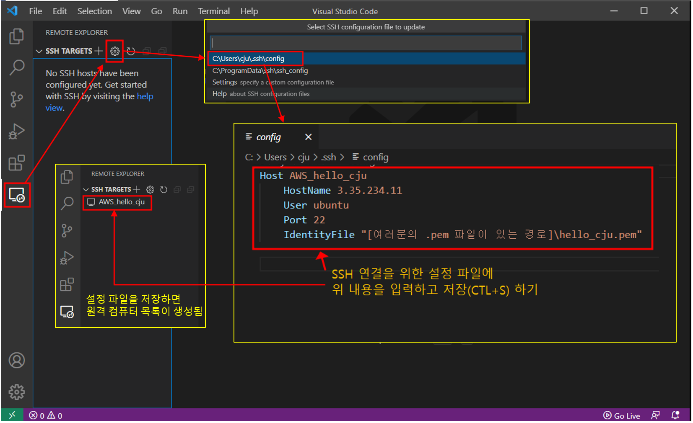</a>
<p class="caption"><span class="caption-number">Fig. 5.49 </span><span class="caption-text">VS code에 SSH 설정(config) 파일 작성</span><a class="headerlink" href="#appendix-46-vscode-remote-config-setting" title="Permalink to this image">¶</a></p>
</div>
<p>차근차근 설명해 보겠습니다.</p>
<p>그림 <a class="reference internal" href="#appendix-46-vscode-remote-config-setting"><span class="std std-numref">Fig. 5.49</span></a> 참고하면서 따라해 보세요.</p>
<p>먼저 <code class="docutils literal notranslate"><span class="pre">Remote-SSH</span></code> 설치 성공했다면, VS code 왼쪽에 아이콘이 세로로 모여있는 곳에서 원격접속 아이콘을 클릭합니다.</p>
<p><code class="docutils literal notranslate"><span class="pre">SSH</span> <span class="pre">TARGETS</span></code>라는 창이 생깁니다.
이전에 등록해 놓은 원격 컴퓨터가 있다면 목록이 나타납니다.
처음으로 원격지 컴퓨터(서버)를 등록하는 경우라면 아무것도 없습니다.</p>
<p>톱니바퀴 모양 아이콘을 클릭합니다.
SSH 설정파일 작성이 가능한 목록이 보입니다.
대부분 MS 윈도우 운영체제일 경우 대부분 <code class="docutils literal notranslate"><span class="pre">C:\Users\본인아이디\.ssh\config</span></code>라는 목록이 있을 겁니다. 본인의 컴퓨터가 리눅스 또는 맥OS일 경우는 설정파일(<code class="docutils literal notranslate"><span class="pre">config</span></code>) 파일이 있는 위치가 자동으로 나타납니다. 우리는 <code class="docutils literal notranslate"><span class="pre">C:\Users\본인아이디\.ssh\config</span></code> 선택합니다.</p>
<p>설정파일을 편집할 수 있는 창이 생성됩니다.
서버 접속에 필요한 기본적인 것은 서버의 IP 주소, 사용자 아이디, 포트 번호 입니다.
다음과 같이 입력합니다.
<code class="docutils literal notranslate"><span class="pre">IdentityFile</span></code>는 <code class="docutils literal notranslate"><span class="pre">.pem</span></code> 파일을 저장해 놓은 디렉토리 경로를 의미합니다.
아래 예시는 MS 윈도우 경로 기준으로 작성된 예시 입니다.</p>
<div class="highlight-default notranslate"><div class="highlight"><pre><span></span><span class="n">Host</span> <span class="p">[</span><span class="n">원격</span> <span class="n">컴퓨터에</span> <span class="n">붙여줄</span> <span class="n">이름</span><span class="p">]</span>
    <span class="n">HostName</span> <span class="p">[</span><span class="n">원격</span> <span class="n">컴퓨터의</span> <span class="n">IP</span> <span class="n">주소</span><span class="p">]</span>
    <span class="n">User</span> <span class="p">[</span><span class="n">원격</span> <span class="n">컴퓨터에서</span> <span class="n">사용할</span> <span class="n">아이디</span><span class="p">]</span>
    <span class="n">Port</span> <span class="mi">22</span> <span class="p">[</span><span class="n">접속</span> <span class="n">포트</span><span class="p">]</span>
    <span class="n">IdentityFile</span> <span class="s2">&quot;[여러분의 .pem 파일이 있는 경로]\[.pem 파일명]&quot;</span>
</pre></div>
</div>
<p>감이 안 잡히면 그림 <a class="reference internal" href="#appendix-46-vscode-remote-config-setting"><span class="std std-numref">Fig. 5.49</span></a> 참고하세요.</p>
<p>위 내용을 입력하고 저장합니다.
그리고 새로 생성한 리모트 서버에 접속합니다.</p>
<p>하지만 아래와 같은 무시무시한 에러가 날 수 있습니다. ㅠㅠ</p>
<div class="highlight-default notranslate"><div class="highlight"><pre><span></span>[16:51:51.096] Log Level: 2
[16:51:51.097] remote-ssh@0.74.0
[16:51:51.097] win32 x64
[16:51:51.101] SSH Resolver called for &quot;ssh-remote+7b22686f73744e616d65223a224157535f68656c6c6f5f636a75227d&quot;, attempt 1
[16:51:51.102] &quot;remote.SSH.useLocalServer&quot;: false
[16:51:51.102] &quot;remote.SSH.showLoginTerminal&quot;: false
[16:51:51.102] &quot;remote.SSH.remotePlatform&quot;: {&quot;DeepLearning&quot;:&quot;linux&quot;,&quot;ACIN_GPU_server&quot;:&quot;linux&quot;,&quot;AIHC_GPU_server&quot;:&quot;linux&quot;,&quot;AWS_hello_cju&quot;:&quot;linux&quot;}
[16:51:51.102] &quot;remote.SSH.path&quot;: undefined
[16:51:51.102] &quot;remote.SSH.configFile&quot;: undefined
[16:51:51.102] &quot;remote.SSH.useFlock&quot;: true
[16:51:51.103] &quot;remote.SSH.lockfilesInTmp&quot;: false
[16:51:51.103] &quot;remote.SSH.localServerDownload&quot;: auto
[16:51:51.103] &quot;remote.SSH.remoteServerListenOnSocket&quot;: false
[16:51:51.103] &quot;remote.SSH.showLoginTerminal&quot;: false
[16:51:51.103] &quot;remote.SSH.defaultExtensions&quot;: []
[16:51:51.103] &quot;remote.SSH.loglevel&quot;: 2
[16:51:51.103] &quot;remote.SSH.enableDynamicForwarding&quot;: true
[16:51:51.103] &quot;remote.SSH.enableRemoteCommand&quot;: false
[16:51:51.104] &quot;remote.SSH.serverPickPortsFromRange&quot;: {}
[16:51:51.104] &quot;remote.SSH.serverInstallPath&quot;: {}
[16:51:51.120] SSH Resolver called for host: AWS_hello_cju
[16:51:51.120] Setting up SSH remote &quot;AWS_hello_cju&quot;
[16:51:51.142] Using commit id &quot;f80445acd5a3dadef24aa209168452a3d97cc326&quot; and quality &quot;stable&quot; for server
[16:51:51.148] Install and start server if needed
[16:51:51.151] Checking ssh with &quot;ssh -V&quot;
[16:51:51.190] &gt; OpenSSH_for_Windows_8
[16:51:51.190] &gt; .1p1, LibreSSL 3.0.2

[16:51:51.195] Running script with connection command: ssh -T -D 64713 &quot;AWS_hello_cju&quot; bash
[16:51:51.197] Terminal shell path: C:\Windows\System32\cmd.exe
[16:51:51.432] &gt; ]0;C:\Windows\System32\cmd.exe
[16:51:51.432] Got some output, clearing connection timeout
[16:51:51.450] &gt; C:\\Users\\cju/.ssh/config: line 32: Bad configuration option: `    
&gt; C:\\Users\\cju/.ssh/config: terminating, 1 bad configuration options
&gt; 프로세스에서 없는 파이프에 쓰려고 했습니다.
&gt; 
[16:51:52.720] &quot;install&quot; terminal command done
[16:51:52.721] Install terminal quit with output: 프로세스에서 없는 파이프에 쓰려고 했습니다.
[16:51:52.721] Received install output: 프로세스에서 없는 파이프에 쓰려고 했습니다.
[16:51:52.722] Failed to parse remote port from server output
[16:51:52.723] Resolver error: Error: 
	at Function.Create (c:\Users\cju\.vscode\extensions\ms-vscode-remote.remote-ssh-0.74.0\out\extension.js:1:585917)
	at Object.t.handleInstallOutput (c:\Users\cju\.vscode\extensions\ms-vscode-remote.remote-ssh-0.74.0\out\extension.js:1:584569)
	at Object.t.tryInstall (c:\Users\cju\.vscode\extensions\ms-vscode-remote.remote-ssh-0.74.0\out\extension.js:1:680558)
	at processTicksAndRejections (internal/process/task_queues.js:93:5)
	at async c:\Users\cju\.vscode\extensions\ms-vscode-remote.remote-ssh-0.74.0\out\extension.js:1:643417
	at async Object.t.withShowDetailsEvent (c:\Users\cju\.vscode\extensions\ms-vscode-remote.remote-ssh-0.74.0\out\extension.js:1:646762)
	at async Object.t.resolve (c:\Users\cju\.vscode\extensions\ms-vscode-remote.remote-ssh-0.74.0\out\extension.js:1:644496)
	at async c:\Users\cju\.vscode\extensions\ms-vscode-remote.remote-ssh-0.74.0\out\extension.js:1:721503
[16:51:52.729] ------
</pre></div>
</div>
<p>위와 같은 문제(서버 접속 실)는 접속 에러 내용을 읽다 보면 <code class="docutils literal notranslate"><span class="pre">&gt;</span> <span class="pre">C:\Users\cju/.ssh/config:</span> <span class="pre">terminating,</span> <span class="pre">1</span> <span class="pre">bad</span> <span class="pre">configuration</span> <span class="pre">options</span> <span class="pre">프로세스에서</span> <span class="pre">없는</span> <span class="pre">파이프에</span> <span class="pre">쓰려고</span> <span class="pre">했습니다.</span></code> 라는 메시지가 원인이라는 것을 알 수 있습니다.</p>
<p>비밀키 <code class="docutils literal notranslate"><span class="pre">.pem</span></code> 파일은 다른 프로세스(실행중인 프로그램)이나 다른 사용자와 동시에 공유되어서는 안됩니다.</p>
<p>다른 프로그램에서 공유키 <code class="docutils literal notranslate"><span class="pre">.pem</span></code> 파일을 사용하고 있거나, 공유 폴더로 지정된 경우가 있는지 확인합니다. 공유키 <code class="docutils literal notranslate"><span class="pre">.pem</span></code> 파일의 공유를 중지하는 방법은 그림 <a class="reference internal" href="#appendix-47-vscode-stop-share-folder"><span class="std std-numref">Fig. 5.50</span></a> 참고하세요.</p>
<div class="figure align-left" id="appendix-47-vscode-stop-share-folder">
<a class="bg-primary mb-1 reference internal image-reference" href="../../_images/appendix_47_vscode_stop_share_folder.png">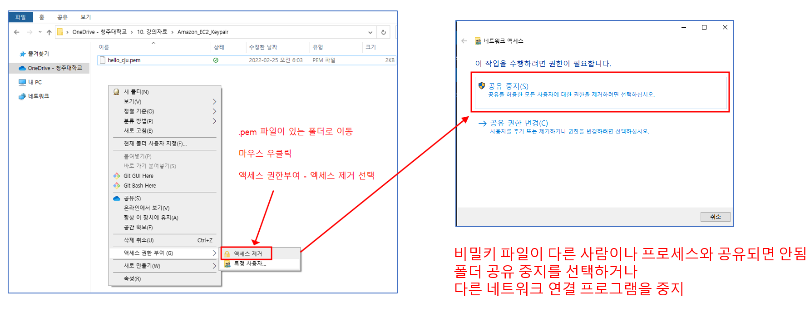</a>
<p class="caption"><span class="caption-number">Fig. 5.50 </span><span class="caption-text">VS code에 SSH 설정(config) 파일 작성</span><a class="headerlink" href="#appendix-47-vscode-stop-share-folder" title="Permalink to this image">¶</a></p>
</div>
<p>서버에 정상적으로 접속하면 그림 <a class="reference internal" href="#appendix-48-vscode-open-folder"><span class="std std-numref">Fig. 5.51</span></a>와 같이 서버의 폴더(디렉토리)를 선택하여 열 수 있습니다.</p>
<p>먼저 <code class="docutils literal notranslate"><span class="pre">폴더</span> <span class="pre">열기</span></code> 또는 <code class="docutils literal notranslate"><span class="pre">Open</span> <span class="pre">Folder</span></code> 메뉴를 선택하면 중앙 상단에 접속한 서버의 기본(default) 위치가 나타납니다. 일반적으로 <code class="docutils literal notranslate"><span class="pre">/home/사용자아이디</span></code> 위치 입니다. 아마존 클라우드 리눅스 서버인 경우 기본 시작 위치는 <code class="docutils literal notranslate"><span class="pre">/home/ubuntu/</span></code> 입니다.</p>
<p>마우스 클릭을 통해 본인이 원하는 폴더를 선택하고 <code class="docutils literal notranslate"><span class="pre">OK</span></code>를 클릭합니다. 이때 처음 접속하는 폴더일 경우 <code class="docutils literal notranslate"><span class="pre">Do</span> <span class="pre">you</span> <span class="pre">trust</span> <span class="pre">the</span> <span class="pre">authors</span> <span class="pre">of</span> <span class="pre">the</span> <span class="pre">files</span> <span class="pre">in</span> <span class="pre">this</span> <span class="pre">folder?</span></code>라고 묻는 창이 나타납니다. 폴더를 사용해야 하니 <code class="docutils literal notranslate"><span class="pre">Yes,</span> <span class="pre">I</span> <span class="pre">trust</span> <span class="pre">the</span> <span class="pre">authors</span></code>를 클릭합니다. 다음 접속부터 이 메시지를 생략하려면 체크 박스에 체크해 줍니다.</p>
<div class="figure align-left" id="appendix-48-vscode-open-folder">
<a class="bg-primary mb-1 reference internal image-reference" href="../../_images/appendix_48_vscode_open_folder.png">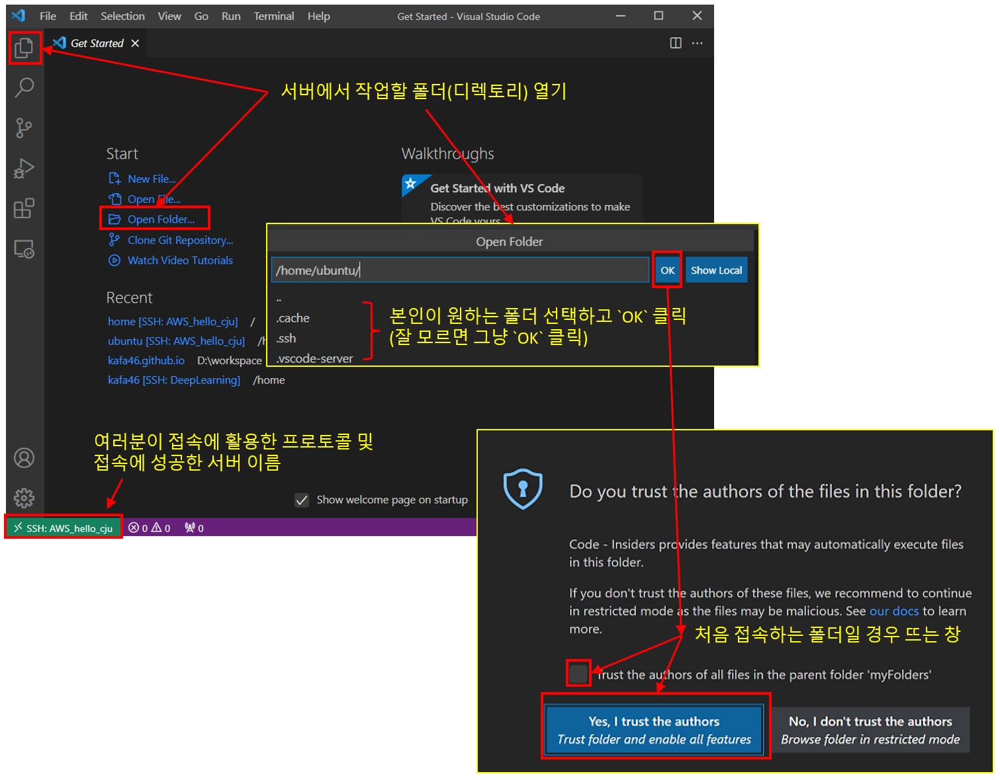</a>
<p class="caption"><span class="caption-number">Fig. 5.51 </span><span class="caption-text">접속한 서버에서 원하는 작업 디렉토리 선택 및 이동</span><a class="headerlink" href="#appendix-48-vscode-open-folder" title="Permalink to this image">¶</a></p>
</div>
<p>원하는 디렉토리를 선택해서 접속에 성공하면 그림 <a class="reference internal" href="#appendix-49-vscode-open-folder-after"><span class="std std-numref">Fig. 5.52</span></a> 같은 화면이 될 것입니다.
왼쪽에는 파일 탐색기 창이 보입니다. 우리가 윈도우에서 사용하는 파일 탐색기와 동일한 기능을 제공합니다.
오른쪽 상단은 파일을 열거나 새로 만들면 해당 파일 내용을 볼 수 있는 편집기 창 공간입니다.
오른쪽 하단의 그림은 접속한 서버의 터미널 입니다.
Xshell과 같은 SSH client 프로그램을 별도로 이용하지 않더라도 VS code에서 직접 명령어를 사용할 수 있습니다.</p>
<div class="figure align-left" id="appendix-49-vscode-open-folder-after">
<a class="bg-primary mb-1 reference internal image-reference" href="../../_images/appendix_49_vscode_open_folder_after.png">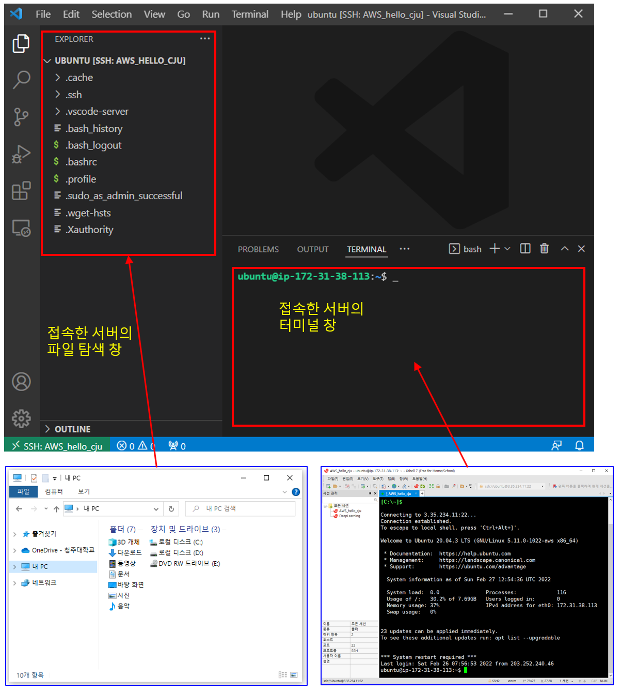</a>
<p class="caption"><span class="caption-number">Fig. 5.52 </span><span class="caption-text">접속한 서버의 디렉토리에 최종적으로 들어간 상황</span><a class="headerlink" href="#appendix-49-vscode-open-folder-after" title="Permalink to this image">¶</a></p>
</div>
<p>이제 VS code를 이용하여 SSH 접속하는 방법을 모두 마쳤습니다.
서버에 접속하여 편리한 환경에서 개발할 수 있게 되었습니다.</p>
<p>축하드립니다 .^^.</p>
</div>
</div>
</div>

    <script type="text/x-thebe-config">
    {
        requestKernel: true,
        binderOptions: {
            repo: "binder-examples/jupyter-stacks-datascience",
            ref: "master",
        },
        codeMirrorConfig: {
            theme: "abcdef",
            mode: "python"
        },
        kernelOptions: {
            kernelName: "python3",
            path: "./Contents\Appendix"
        },
        predefinedOutput: true
    }
    </script>
    <script>kernelName = 'python3'</script>

              </div>
              
            
                <!-- Previous / next buttons -->
<div class='prev-next-area'> 
    <a class='left-prev' id="prev-link" href="apdx04_EC2_server_create.html" title="previous page">
        <i class="fas fa-angle-left"></i>
        <div class="prev-next-info">
            <p class="prev-next-subtitle">previous</p>
            <p class="prev-next-title"><span class="section-number">5.3. </span>아마존 EC2 서버 만들기</p>
        </div>
    </a>
    <a class='right-next' id="next-link" href="apdx02_subdomain.html" title="next page">
    <div class="prev-next-info">
        <p class="prev-next-subtitle">next</p>
        <p class="prev-next-title"><span class="section-number">5.5. </span>서브도메인(Sub-domain)</p>
    </div>
    <i class="fas fa-angle-right"></i>
    </a>
</div>
            
        </div>
    </div>
    <footer class="footer">
  <p>
    
      By Giseop Noh<br/>
    
        &copy; Copyright Prof. Giseop Noh in Cheongju University.<br/>
      <div class="extra_footer">
        <p>
    본 책자에 적용되는 라이센스 
    <a href="https://opensource.org/licenses/MIT">
      MIT License
    </a>.
</p>

      </div>
  </p>
</footer>
</main>


      </div>
    </div>
  
  <script src="../../_static/js/index.be7d3bbb2ef33a8344ce.js"></script>

  </body>
</html>